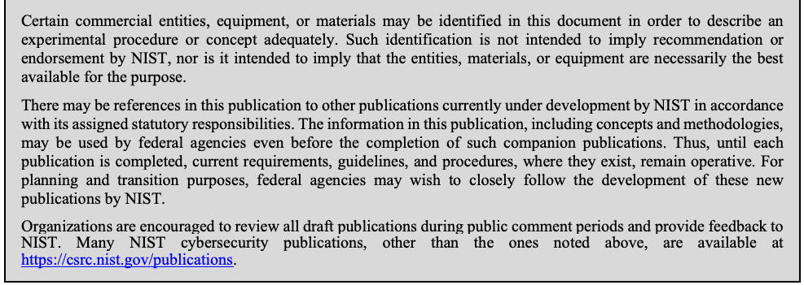
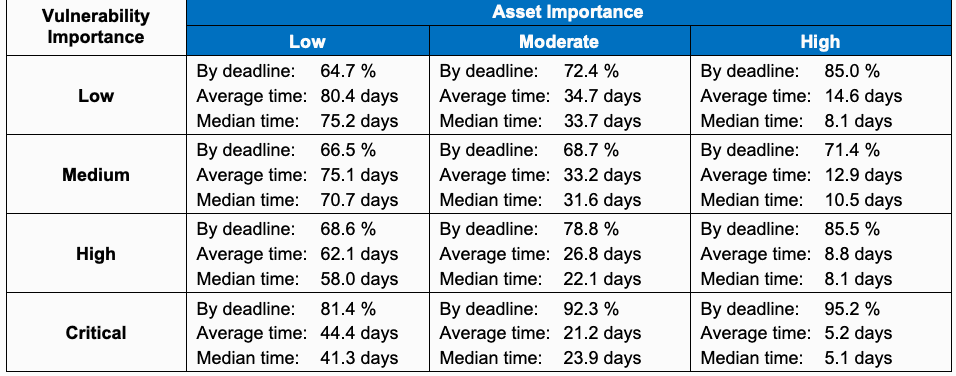
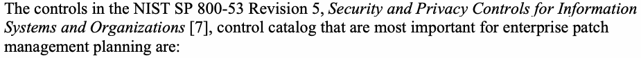

NIST SP 800-40 Rev. 4 日本語訳
英語タイトル : Guide to Enterprise Patch Management Planning: Preventive Maintenance for Technology日本語タイトル : 企業向けパッチ管理計画ガイド：技術の予防保守
公開日 : 2022-04-06
原文URL : https://csrc.nist.gov/pubs/sp/800/40/r4/final
翻訳編集 : 自動生成
[要約] SP 800-40 Rev. 4 は、組織全体でパッチを特定し、優先順位を付け、入手・インストールして検証する、企業向けパッチ管理の計画を示します。パッチ適用を予防保守の一部と位置付け、ソフトウェア脆弱性へのリスク対応、資産のインベントリ作成、保守グループの定義などの推奨事項を扱います。主な対象読者は最高情報責任者や最高情報セキュリティ責任者などで、パッチ適用を簡素化して運用に定着させる企業戦略の策定を促します。
有志による非公式の日本語訳です。NIST および米国商務省が作成・承認・推奨したものではありません。要件の確認にはNIST の正式版 PDFを参照してください。
NIST Special Publication NIST SP 800-40r4
NIST特別刊行物 NIST SP 800-40r4
Guide to Enterprise Patch Management Planning:
企業向けパッチ管理計画ガイド：
Preventive Maintenance for Technology
技術の予防保守
Murugiah Souppaya Karen Scarfone
Murugiah Souppaya Karen Scarfone
This publication is available free of charge from: https://doi.org/10.6028/NIST.SP.800-40r4
本刊行物は次のリンクから無料で入手できます：https://doi.org/10.6028/NIST.SP.800-40r4
NIST Special Publication NIST SP 800-40r4
NIST特別刊行物 NIST SP 800-40r4
Guide to Enterprise Patch Management Planning:
企業向けパッチ管理計画ガイド：
Preventive Maintenance for Technology
技術の予防保守
Murugiah Souppaya Computer Security Division Information Technology Laboratory
Murugiah Souppaya Computer Security Division Information Technology Laboratory
Karen Scarfone Scarfone Cybersecurity Clifton, VA
Karen Scarfone、Scarfone Cybersecurity、バージニア州クリフトン
This publication is available free of charge from: https://doi.org/10.6028/NIST.SP.800-40r4
本刊行物は次のリンクから無料で入手できる：https://doi.org/10.6028/NIST.SP.800-40r4
April 2022
2022年4月
U.S. Department of Commerce Gina M. Raimondo, Secretary
米国商務省 Gina M. Raimondo 長官
National Institute of Standards and Technology James K. Olthoff, Performing the Non-Exclusive Functions and Duties of the Under Secretary of Commerce for Standards and Technology & Director, National Institute of Standards and Technology
米国国立標準技術研究所 James K. Olthoff（商務省標準技術担当次官および米国国立標準技術研究所所長の非専属的な職務と任務を代行）
Authority
権限
This publication has been developed by NIST in accordance with its statutory responsibilities under the Federal Information Security Modernization Act (FISMA) of 2014, 44 U.S.C. § 3551 et seq., Public Law (P.L.) 113-283. NIST is responsible for developing information security standards and guidelines, including minimum requirements for federal information systems, but such standards and guidelines shall not apply to national security systems without the express approval of appropriate federal officials exercising policy authority over such systems. This guideline is consistent with the requirements of the Office of Management and Budget (OMB) Circular A-130.
本刊行物は、2014年連邦情報セキュリティ近代化法（FISMA）、44 U.S.C. § 3551以下、ならびに公法（P.L.）113-283に基づく法定責任に従ってNISTが作成した。NISTは、連邦情報システムの最低要件を含む情報セキュリティ標準およびガイドラインを策定する責任を負う。ただし、適切な政策権限を有する連邦政府職員の明示的な承認がない限り、これらの標準およびガイドラインは国家安全保障システムに適用されない。このガイドラインは、行政管理予算局（OMB）通達A-130の要件に整合している。
Nothing in this publication should be taken to contradict the standards and guidelines made mandatory and binding on federal agencies by the Secretary of Commerce under statutory authority. Nor should these guidelines be interpreted as altering or superseding the existing authorities of the Secretary of Commerce, Director of the OMB, or any other federal official. This publication may be used by nongovernmental organizations on a voluntary basis and is not subject to copyright in the United States. Attribution would, however, be appreciated by NIST.
本刊行物のいかなる内容も、法定権限に基づき商務長官が連邦機関に義務付け、拘束力を持たせた標準およびガイドラインに反すると解釈してはならない。また、本ガイドラインを、商務長官、OMB長官、その他の連邦政府職員が持つ既存の権限を変更または置き換えるものと解釈してはならない。本刊行物は、非政府組織が任意に利用でき、米国では著作権の対象ではない。ただし、NISTは出典の明記を歓迎する。
National Institute of Standards and Technology Special Publication 800-40 Rev. 4 Natl. Inst. Stand. Technol. Spec. Publ. 800-40r4, 28 pages (April 2022) CODEN: NSPUE2
米国国立標準技術研究所 特別刊行物800-40 改訂4 Natl. Inst. Stand. Technol. Spec. Publ. 800-40r4、28ページ（2022年4月） CODEN: NSPUE2
This publication is available free of charge from: https://doi.org/10.6028/NIST.SP.800-40r4
本刊行物は次のリンクから無料で入手できます：https://doi.org/10.6028/NIST.SP.800-40r4
Certain commercial entities, equipment, or materials may be identified in this document in order to describe an experimental procedure or concept adequately. Such identification is not intended to imply recommendation or endorsement by NIST, nor is it intended to imply that the entities, materials, or equipment are necessarily the best available for the purpose. There may be references in this publication to other publications currently under development by NIST in accordance with its assigned statutory responsibilities. The information in this publication, including concepts and methodologies, may be used by federal agencies even before the completion of such companion publications. Thus, until each publication is completed, current requirements, guidelines, and procedures, where they exist, remain operative. For planning and transition purposes, federal agencies may wish to closely follow the development of these new publications by NIST. Organizations are encouraged to review all draft publications during public comment periods and provide feedback to NIST. Many NIST cybersecurity publications, other than the ones noted above, are available at https://csrc.nist.gov/publications.
原本PDFの抜粋画像

この文書では、実験手順または概念を十分に説明するため、特定の商業団体、機器または材料に言及する場合がある。そのような言及は、NISTによる推奨または保証を意味するものではなく、また、当該団体、材料または機器が、その目的に利用可能なもののうち必ずしも最良であることを意味するものでもない。本刊行物では、法定責任に従ってNISTが現在策定中の他の刊行物を参照する場合がある。概念や方法論を含む本刊行物の情報は、関連刊行物が完成する前であっても連邦機関が利用できる。そのため、各刊行物が完成するまでは、現行の要件、ガイドラインおよび手順が存在する場合には、それらが引き続き有効である。計画および移行のため、連邦機関はNISTによるこれらの新刊行物の策定状況を注意深く確認するとよい。組織には、公開コメント期間中にすべての草案刊行物を確認し、NISTに意見を提出することを推奨する。上記のものを除く多くのNISTサイバーセキュリティ刊行物は、https://csrc.nist.gov/publications で入手できる。
Submit comments on this publication to: cyberhygiene@nist.gov National Institute of Standards and Technology Attn: Applied Cybersecurity Division, Information Technology Laboratory 100 Bureau Drive (Mail Stop 2000) Gaithersburg, MD 20899-2000
本刊行物に関するコメント送付先：cyberhygiene@nist.gov 米国国立標準技術研究所 宛先：応用サイバーセキュリティ部門、情報技術研究所 100 Bureau Drive（Mail Stop 2000）Gaithersburg, MD 20899-2000
All comments are subject to release under the Freedom of Information Act (FOIA).
すべてのコメントは、情報公開法（FOIA）に基づき公開される場合がある。
Reports on Computer Systems Technology
コンピューター・システム技術に関する報告書
The Information Technology Laboratory (ITL) at the National Institute of Standards and Technology (NIST) promotes the U.S. economy and public welfare by providing technical leadership for the Nation’s measurement and standards infrastructure. ITL develops tests, test methods, reference data, proof of concept implementations, and technical analyses to advance the development and productive use of information technology. ITL’s responsibilities include the development of management, administrative, technical, and physical standards and guidelines for the cost-effective security and privacy of other than national security-related information in federal information systems. The Special Publication 800-series reports on ITL’s research, guidelines, and outreach efforts in information system security, and its collaborative activities with industry, government, and academic organizations.
米国国立標準技術研究所（NIST）の情報技術研究所（ITL）は、米国の計測・標準インフラに技術面での指導を提供することで、米国経済と公共の福祉を促進している。ITLは、情報技術の開発と生産的な利用を推進するため、試験、試験方法、参照データ、概念実証の実装、および技術分析を開発する。ITLの責務には、連邦情報システムにおける国家安全保障関連以外の情報について、費用対効果の高いセキュリティとプライバシーを確保するための、管理的、運営的、技術的、物理的な標準およびガイドラインの開発が含まれる。Special Publication 800シリーズの報告書は、情報システム・セキュリティに関するITLの研究、ガイドライン、アウトリーチ活動、ならびに産業界、政府、学術機関との共同活動について報告するものである。
Abstract
概要
Enterprise patch management is the process of identifying, prioritizing, acquiring, installing, and verifying the installation of patches, updates, and upgrades throughout an organization. Patching is more important than ever because of the increasing reliance on technology, but there is often a divide between business/mission owners and security/technology management about the value of patching. This publication frames patching as a critical component of preventive maintenance for computing technologies – a cost of doing business, and a necessary part of what organizations need to do in order to achieve their missions. This publication also discusses common factors that affect enterprise patch management and recommends creating an enterprise strategy to simplify and operationalize patching while also improving reduction of risk. Preventive maintenance through enterprise patch management helps prevent compromises, data breaches, operational disruptions, and other adverse events.
企業のパッチ管理とは、組織全体にわたって、パッチ、アップデート、およびアップグレードを特定し、優先順位を付け、入手し、インストールし、そのインストールを検証するプロセスである。技術への依存が高まっているため、パッチ適用はこれまで以上に重要になっているが、パッチ適用の価値については、業務／ミッションの責任者とセキュリティ／技術の管理者との間に隔たりがあることが多い。本刊行物は、パッチ適用を、コンピューティング技術の予防保守の重要な要素、すなわち事業運営に必要なコストであり、組織がミッションを達成するために行うべきことの必要な一部として位置付ける。本刊行物はまた、企業のパッチ管理に影響する共通の要因を論じ、パッチ適用を簡素化して運用に定着させるとともに、リスク低減も改善するための企業戦略を策定することを推奨する。企業のパッチ管理による予防保守は、危殆化、データ侵害、業務の中断、その他の有害な事象を防ぐのに役立つ。
Keywords
キーワード
enterprise patch management; patch; risk management; update; upgrade; vulnerability management.
企業のパッチ管理; パッチ; リスク管理; アップデート; アップグレード; 脆弱性管理。
Acknowledgments
謝辞
The authors wish to thank their colleagues who reviewed the document and contributed to its technical content, especially Mark Simos from Microsoft, and Jamie Brown, Vincent Gilcreest, and Glen Pendley from Tenable. The authors also appreciate the efforts of all the individuals and organizations that provided feedback on the public comment draft, especially BlackBerry, the Cybersecurity & Infrastructure Security Agency (CISA), the National Security Agency (NSA), The SECOND Advisories, Carla Brinker, and Ron Colvin.
著者らは、本文書をレビューし、その技術的内容に貢献した同僚、とりわけMicrosoftの Mark Simos、およびTenableの Jamie Brown、Vincent Gilcreest、Glen Pendley に感謝する。著者らはまた、パブリックコメント版にフィードバックを寄せたすべての個人および組織、とりわけBlackBerry、Cybersecurity & Infrastructure Security Agency（CISA）、National Security Agency（NSA）、The SECOND Advisories、Carla Brinker、Ron Colvin の尽力にも感謝する。
Audience
対象読者
The primary audience for this publication is chief information officers, chief information security officers, cybersecurity directors and managers, and others who are responsible for managing organizational risk related to the use of software. Others with an interest in the topic, including business and mission owners, security engineers and architects, system administrators, and security operations personnel, may find portions of the publication to be informative.
本刊行物の主な対象読者は、最高情報責任者、最高情報セキュリティ責任者、サイバーセキュリティの部長および管理者、ならびにソフトウェアの利用に関連する組織のリスクを管理する責任を負うその他の者である。業務・ミッションの責任者、セキュリティ・エンジニアおよびアーキテクト、システム管理者、セキュリティ運用要員など、このテーマに関心を持つその他の者も、本刊行物の一部が参考になる場合がある。
Trademark Information
商標情報
All names are registered trademarks or trademarks of their respective companies.
すべての名称は、それぞれの企業の登録商標または商標である。
Patent Disclosure Notice
特許開示に関する通知
NOTICE: The Information Technology Laboratory (ITL) has requested that holders of patent claims whose use may be required for compliance with the guidance or requirements of this publication disclose such patent claims to ITL. However, holders of patents are not obligated to respond to ITL calls for patents and ITL has not undertaken a patent search in order to identify which, if any, patents may apply to this publication.
通知：情報技術研究所（ITL）は、本刊行物のガイダンスまたは要件への準拠に使用が必要となる可能性のある特許請求項を保有する者に対し、当該請求項をITLに開示するよう要請している。ただし、特許保有者は、ITLからの特許に関する照会に回答する義務を負わず、ITLも本刊行物に適用される可能性のある特許の有無を特定するための特許調査を実施していない。
As of the date of publication and following call(s) for the identification of patent claims whose use may be required for compliance with the guidance or requirements of this publication, no such patent claims have been identified to ITL.
公開日現在、本刊行物のガイダンスまたは要件への準拠に必要となる可能性のある特許請求項の特定を求めたところ、ITLに報告された該当請求項はなかった。
No representation is made or implied by ITL that licenses are not required to avoid patent infringement in the use of this publication.
ITLは、本刊行物を使用する際に特許侵害を避けるためのライセンスが不要であるとは表明せず、そのような含意も示していない。
Executive Summary
エグゼクティブサマリー
Software used for computing technologies must be maintained because there are many in the world who continuously search for and exploit flaws in software. Software maintenance includes patching, which is the act of applying a change to installed software – such as firmware, operating systems, or applications – that corrects security or functionality problems or adds new capabilities. Enterprise patch management is the process of identifying, prioritizing, acquiring, installing, and verifying the installation of patches, updates, and upgrades throughout an organization.
コンピューティング技術に用いるソフトウェアは保守しなければならない。世界中で多くの人々が、ソフトウェアの欠陥を絶えず探し、悪用しているためである。ソフトウェア保守にはパッチ適用が含まれる。パッチ適用とは、ファームウェア、オペレーティングシステムまたはアプリケーションなど、インストール済みソフトウェアに変更を適用し、セキュリティ上または機能上の問題を修正したり、新機能を追加したりすることである。企業向けパッチ管理とは、組織全体でパッチ、更新およびアップグレードを特定し、優先順位を付け、取得、インストールし、そのインストールを検証するプロセスである。
In past perimeter-based security architectures, most software was operated on internal networks protected by several layers of network security controls. While patching was generally considered important for reducing the likelihood of compromise and was a common compliance requirement, patching was not always considered a priority. In today’s environments, patching has become more important, often rising to the level of mission criticality. As part of a zero trust approach to security, it is now recognized that the perimeter largely does not exist anymore, and most technologies are directly exposed to the internet, putting systems at significantly greater risk of compromise. This dynamic applies across all computing technologies, whether they are information technology (IT), operational technology (OT), Internet of Things (IoT), mobile, cloud, virtual machine, container, or other types of assets. Zero trust architectures emphasize business asset-specific security over just protecting a network with assets on it, so patching is vital for reducing risk to those individual assets and determining the assets’ trust status.
従来の境界型セキュリティアーキテクチャでは、ソフトウェアの大半は複数層のネットワークセキュリティ管理策で保護された内部ネットワーク上で運用されていた。侵害の可能性を下げるうえでパッチ適用は一般に重要と考えられ、コンプライアンス要件にも広く含まれていたが、常に優先されていたわけではない。今日の環境ではパッチ適用の重要性が増し、ミッション遂行に不可欠なレベルに達することも多い。ゼロトラストのセキュリティアプローチでは、ネットワーク境界はもはやほとんど存在しないと認識されている。多くの技術がインターネットに直接さらされ、システムが侵害されるリスクは大幅に高まっている。この状況は、情報技術（IT）、運用技術（OT）、モノのインターネット（IoT）、モバイル、クラウド、仮想マシン、コンテナなど、あらゆる種類のコンピューティング技術に当てはまる。ゼロトラストアーキテクチャは、資産を含むネットワーク自体の保護だけでなく、個々の業務資産に特化したセキュリティを重視する。そのため、個々の資産のリスクを低減し、その信頼状態を判断するうえでパッチ適用が重要である。
There is often a divide between business/mission owners and security/technology management. Business/mission owners may believe that patching negatively affects productivity, since it requires scheduled downtime for maintenance and introduces the risk of additional downtime if something goes wrong and disrupts operations. Leadership and business/mission owners should reconsider the priority of enterprise patch management in light of today’s risks. Patching should be considered a standard cost of doing business and should be rigorously followed and tracked. Just as preventive maintenance on corporate fleet vehicles can help avoid costly breakdowns, patching should be viewed as a normal and necessary part of reliably achieving the organization’s missions. If an organization needs a particular technology to support its mission, it also needs to maintain that technology throughout its life cycle – and that includes patching.
事業・ミッションの責任者とセキュリティ・技術管理者の間には、認識の隔たりがあることが多い。事業・ミッションの責任者は、保守のために計画停止が必要であり、問題が起きて業務が中断すれば追加の停止が発生するリスクもあることから、パッチ適用は生産性に悪影響を及ぼすと考える場合がある。今日のリスクを踏まえ、経営層および事業・ミッションの責任者は、企業向けパッチ管理の優先度を見直すべきである。パッチ適用は、事業運営に伴う標準的なコストと捉え、厳格に実行し、その状況を追跡すべきである。社用車両の予防保守が高額な故障を防ぐのに役立つのと同じように、パッチ適用は組織のミッションを確実に達成するための通常かつ必要な活動と見なすべきである。ミッションを支えるために特定の技術が必要なら、その技術をライフサイクル全体にわたって保守する必要があり、パッチ適用もその一部である。
Leadership at all levels of the organization, business/mission owners, and security/technology management teams should jointly create an enterprise patch management strategy that simplifies and operationalizes patching while also improving its reduction of risk. This will strengthen organizational resiliency to active threats and minimize business and mission impacts. This publication provides recommendations for enterprise patch management planning.
組織のあらゆる階層の経営層、事業・ミッションの責任者、およびセキュリティ・技術管理チームは共同で、リスク低減をさらに進めつつ、パッチ適用を簡素化して運用可能にする企業向けパッチ管理戦略を策定すべきである。これにより、進行中の脅威に対する組織のレジリエンスが高まり、事業やミッションへの影響を最小限に抑えられる。本刊行物は、企業向けパッチ管理を計画するための推奨事項を示す。
Table of Contents
目次
Executive Summary ..................................................................................................... iv
エグゼクティブサマリー ........................................................ iv
1 Introduction — 1
1 はじめに — 1
1.1 Purpose and Scope — 1
1.1 目的と適用範囲 — 1
1.2 Changes from Previous Versions — 1
1.2 旧版からの変更 — 1
1.3 Publication Structure — 2
1.3 本刊行物の構成 — 2
2 Risk Response Approaches for Software Vulnerabilities — 3
2 ソフトウェア脆弱性に対するリスク対応アプローチ — 3
2.1 Risk Responses — 3
2.1 リスク対応 — 3
2.2 Software Vulnerability Management Life Cycle — 4
2.2 ソフトウェア脆弱性管理のライフサイクル — 4
2.3 Risk Response Execution — 5
2.3 リスク対応の実行 — 5
2.3.1 Prepare to Deploy the Patch — 5
2.3.1 パッチの展開準備 — 5
2.3.2 Deploy the Patch — 6
2.3.2 パッチの展開 — 6
2.3.3 Verify Deployment — 7
2.3.3 展開の検証 — 7
2.3.4 Monitor the Deployed Patches — 7
2.3.4 展開済みパッチの監視 — 7
3 Recommendations for Enterprise Patch Management Planning — 8
3 企業向けパッチ管理計画の推奨事項 — 8
3.1 Reduce Patching-Related Disruptions — 9
3.1 パッチ適用に伴う中断の低減 — 9
3.2 Inventory Your Software and Assets — 10
3.2 ソフトウェアと資産のインベントリ作成 — 10
3.3 Define Risk Response Scenarios — 11
3.3 リスク対応シナリオの定義 — 11
3.4 Assign Each Asset to a Maintenance Group — 12
3.4 各資産の保守グループへの割り当て — 12
3.5 Define Maintenance Plans for Each Maintenance Group — 14
3.5 各保守グループの保守計画の定義 — 14
3.5.1 Maintenance Plans for Scenario 1, Routine Patching — 14
3.5.1 シナリオ1（定期的なパッチ適用）の保守計画 — 14
3.5.2 Maintenance Plans for Scenario 2, Emergency Patching — 15
3.5.2 シナリオ2（緊急パッチ適用）の保守計画 — 15
3.5.3 Maintenance Plans for Scenario 3, Emergency Mitigation — 15
3.5.3 シナリオ3（緊急緩和）の保守計画 — 15
3.5.4 Maintenance Plans for Scenario 4, Unpatchable Assets — 15
3.5.4 シナリオ4（パッチ適用不能な資産）の保守計画 — 15
3.5.5 Exceptions to Maintenance Plans — 16
3.5.5 保守計画の例外 — 16
3.6 Choose Actionable Enterprise-Level Patching Metrics — 16
3.6 実行可能な企業レベルのパッチ適用指標の選定 — 16
3.7 Consider Software Maintenance in Procurement — 18
3.7 調達におけるソフトウェア保守の考慮 — 18
References — 19
参考文献 — 19
Appendix A — Mappings to NIST Guidance and Frameworks — 20
付録A — NISTのガイダンスおよびフレームワークとの対応付け — 20
Appendix B — Acronyms — 21
付録B — 略語 — 21
1 Introduction
1 はじめに
1.1 Purpose and Scope
1.1 目的と適用範囲
The purpose of this publication is to help organizations improve their enterprise patch management planning so that they can strengthen their management of risk. This publication strives to illustrate that enterprise patch management is preventive maintenance for an organization’s technology. Adopting this mindset and following the recommendations and suggestions in this document should help organizations in the following ways:
本刊行物の目的は、組織がリスク管理を強化できるよう、企業向けパッチ管理の計画を改善する支援を行うことである。本刊行物は、企業向けパッチ管理が組織の技術に対する予防保守であることを示そうとしている。この考え方を取り入れ、本書の推奨事項や提案に従うことで、組織は次のような効果を得られると期待される。
•Security and technology management and leadership at all levels of the organization will gain a new understanding of the role of patching in enterprise risk management.
•組織のあらゆる階層のセキュリティ・技術管理者および経営層は、企業リスク管理におけるパッチ適用の役割を新たに理解する。
•The security/technology and business/mission sides of the organization will be able to communicate with each other more effectively regarding patch management and reach consensus on planning.
•セキュリティ・技術側と事業・ミッション側の担当者は、パッチ管理についてより効果的に意思疎通し、計画に関する合意に達することができる。
•Personnel from the security/technology and business/mission sides of the organization will be prepared to revamp their enterprise patching strategy throughout the entire patch management life cycle.
•組織のセキュリティ・技術側および事業・ミッション側の要員は、パッチ管理ライフサイクル全体を通じて企業向けパッチ適用戦略を見直す準備が整う。
The discussion of patch management technologies is minimal in this publication. However, NIST Special Publication (SP) 1800-31 [1] provides information on using technologies to implement information technology (IT) patch management policies and processes. Also, Appendix A of SP 1800-31 Volume B discusses recommended practices for securing patch management technologies and the data they use.
本刊行物では、パッチ管理技術に関する議論は最小限にとどめている。一方、NIST特別刊行物（SP）1800-31 [1]には、情報技術（IT）のパッチ管理方針およびプロセスを実装するための技術の利用に関する情報がある。また、SP 1800-31第B巻の付録Aでは、パッチ管理技術およびそれらが使用するデータを保護するための推奨プラクティスを論じている。
This publication is intended to apply to all types of computing technology assets – including IT1, operational technology (OT)2, Internet of Things (IoT), mobile devices, and cloud computing – and to all types of patchable software – including applications, operating systems, and firmware – on those assets.
本刊行物は、IT1、運用技術（OT）2、モノのインターネット（IoT）、モバイル機器、クラウドコンピューティングなど、あらゆる種類のコンピューティング技術資産、およびそれらの資産上で動作するアプリケーション、オペレーティングシステム、ファームウェアなど、パッチ適用可能なあらゆる種類のソフトウェアに適用することを意図している。
1.2 Changes from Previous Versions
1.2 旧版からの変更
This is the fourth version of NIST SP 800-40. The original SP 800-40, Procedures for Handling Security Patches (2002), provided basic information on patching procedures and sources of patch and vulnerability information. SP 800-40 Version 2.0, Creating a Patch and Vulnerability Management Program (2005), built on the original by adding content on processes, metrics, and common issues. Although SP 800-40 and SP 800-40 Version 2.0 are primarily of interest from a historical perspective, they address many of the same topics that organizations are still struggling with today.
これはNIST SP 800-40の第4版である。初版のSP 800-40「セキュリティパッチの取扱手順」（2002年）は、パッチ適用手順とパッチおよび脆弱性情報の情報源に関する基本情報を提供した。SP 800-40バージョン2.0「パッチおよび脆弱性管理プログラムの作成」（2005年）は、プロセス、指標、一般的な課題に関する内容を加えて初版を発展させた。SP 800-40およびSP 800-40バージョン2.0は、主に歴史的な観点から関心を持たれるものだが、今日も組織が苦慮している多くの同じ課題を扱っている。
The third version, SP 800-40, Revision 3, Guide to Enterprise Patch Management Technologies (2013), was written under the assumption that readers already understood the basics of patch management and that what they most needed help with was implementing, configuring, securing, and using enterprise patch management technologies. The latest SP 800-40 version is based on the assumption that, in the overall scope of enterprise patch management, organizations would benefit more from rethinking their patch management planning than their patch management technology. Readers who are particularly interested in enterprise patch management technologies may still benefit from content in Revision 3, although some of it is outdated and there are gaps in its coverage.
第3版のSP 800-40 Rev. 3「企業向けパッチ管理技術ガイド」（2013年）は、読者がパッチ管理の基本をすでに理解しており、企業向けパッチ管理技術の実装、構成、保護、使用に関する支援を最も必要としているという前提で作成された。最新のSP 800-40は、企業向けパッチ管理全体の中で、組織はパッチ管理技術よりもパッチ管理計画を見直すことで、より大きな効果を得られるという前提に基づいている。企業向けパッチ管理技術に特に関心がある読者は、改訂3の内容も引き続き参考にできるが、一部は古く、対象範囲に抜けがある。
1.3 Publication Structure
1.3 本刊行物の構成
The rest of this publication is organized into the following sections and appendices:
本刊行物の残りの部分は、次の各節および付録で構成する。
•Section 2 outlines possible risk response approaches for software vulnerabilities and provides a brief overview of the enterprise patch management life cycle.
•第2節では、ソフトウェア脆弱性に対するリスク対応の選択肢を概説し、企業向けパッチ管理ライフサイクルの概要を示す。
•Section 3 presents a set of principles and actionable recommendations that support those principles for enterprise patch management planning.
•第3節では、企業向けパッチ管理計画を支える一連の原則と、その原則を実践するための具体的な推奨事項を示す。
•The References section defines the references cited throughout the publication.
•「参考文献」には、本刊行物全体で引用する参考文献を記載する。
•Appendix A lists the NIST Cybersecurity Framework Subcategories and the SP 800-53 controls that are most important for enterprise patch management policies and processes.
•付録Aには、企業向けパッチ管理の方針およびプロセスにとって最も重要なNISTサイバーセキュリティフレームワークのサブカテゴリとSP 800-53管理策を記載する。
•Appendix B contains an acronym list.
•付録Bには略語一覧を掲載する。
2 Risk Response Approaches for Software Vulnerabilities
2 ソフトウェア脆弱性に対するリスク対応アプローチ
This section outlines possible risk response approaches for software vulnerabilities, provides an overview of the software vulnerability management life cycle, and takes a closer look at parts of that life cycle with respect to patching.
本節では、ソフトウェア脆弱性に対するリスク対応の選択肢を概説し、ソフトウェア脆弱性管理ライフサイクルの概要を示したうえで、パッチ適用に関わるライフサイクルの一部を詳しく説明する。
2.1 Risk Responses
2.1 リスク対応
Patching is one of several ways to respond to risks from software vulnerabilities. This publication references four types of risk responses [2]:
パッチ適用は、ソフトウェア脆弱性によるリスクへの対応方法の一つである。本刊行物では、次の4種類のリスク対応を扱う[2]。
1.Accept: Accept the risk from vulnerable software as is, such as by relying on existing security controls to prevent vulnerability exploitation or by determining that the potential impact is low enough that no additional action is needed.
1.受容：脆弱性のあるソフトウェアがもたらすリスクを現状のまま受け入れる。例えば、既存のセキュリティ管理策によって脆弱性の悪用を防ぐ、または潜在的な影響は十分に小さく追加対応が不要と判断する。
2.Mitigate: Reduce the risk by eliminating the vulnerabilities (e.g., patching the vulnerable software, disabling a vulnerable feature, or upgrading to a newer software version without the vulnerabilities) and/or deploying additional security controls to reduce vulnerability exploitation (e.g., using firewalls and network segmentation to isolate vulnerable assets, thus reducing the attack surface).
2.緩和：脆弱性を排除する（例：脆弱性のあるソフトウェアにパッチを適用する、脆弱な機能を無効化する、または脆弱性のない新しいバージョンへアップグレードする）および／または追加のセキュリティ管理策を導入して脆弱性の悪用リスクを下げる。後者の例として、ファイアウォールやネットワーク分割を用いて脆弱な資産を隔離し、攻撃対象領域を縮小する方法がある。
3.Transfer: Reduce the risk by sharing some of the consequences with another party, such as by purchasing cybersecurity insurance or by replacing conventional software installations with software-as-a-service (SaaS) usage where the SaaS vendor/managed service provider takes care of patching.
3.移転：サイバーセキュリティ保険の購入や、従来型のソフトウェアインストールをサービスとしてのソフトウェア（SaaS）の利用に置き換え、SaaSベンダーまたはマネージドサービスプロバイダーにパッチ適用を任せるなど、結果の一部を他者と分担してリスクを減らす。
4.Avoid: Ensure that the risk does not occur by eliminating the attack surface, such as by uninstalling the vulnerable software, decommissioning assets with the vulnerabilities, or disabling computing capabilities in assets that can function without them.
4.回避：脆弱性のあるソフトウェアをアンインストールする、脆弱性のある資産を廃止する、または不要なコンピューティング機能を無効にするなど、攻撃対象領域をなくしてリスクが発生しないようにする。
By default, an organization accepts the risk posed by using its software. Software could have vulnerabilities in it at any time that the organization does not know about, and sometimes previously unknown vulnerabilities are exploited – a zero-day attack. Once a new vulnerability becomes publicly known, risk usually increases because attackers are more likely to develop exploits that target the vulnerable software.
組織は既定では、自らが使用するソフトウェアに伴うリスクを受容している。組織が把握していない脆弱性がソフトウェアにいつでも存在する可能性があり、未知の脆弱性が悪用されることもある。これがゼロデイ攻撃である。新たな脆弱性が公に知られると、攻撃者がそのソフトウェアを標的としたエクスプロイトを開発する可能性が高まるため、通常、リスクは増加する。
Installing a patch or update or upgrading software to a newer version without the vulnerabilities are the only forms of risk response that can completely eliminate the vulnerabilities without removing functionality. However, immediately patching, updating, or upgrading vulnerable software is sometimes not viable. Examples of why include the following:
脆弱性のあるソフトウェアから機能を取り除かずに脆弱性を完全に排除できるリスク対応は、パッチまたは更新をインストールするか、脆弱性のない新しいバージョンへアップグレードすることだけである。ただし、脆弱なソフトウェアに直ちにパッチを適用、更新またはアップグレードすることが、常に実行可能とは限らない。例えば、次のような理由がある。
•A patch may not be available yet. For example, a vulnerability may be announced before a patch is ready, and it could be days, weeks, or months before the patch is released.
•パッチがまだ提供されていない場合がある。例えば、パッチの準備前に脆弱性が公表され、パッチの公開まで数日、数週間、または数か月かかることがある。
•The vendor may no longer support the vulnerable software, meaning that a patch for it will never be released because the software is at end-of-life.
•ベンダーが脆弱なソフトウェアをサポートしなくなっている場合がある。ソフトウェアがサポート終了に達しているため、パッチが公開されることはない。
•The organization may need to wait for a scheduled outage window, perform testing first, update other software that interacts with the software to be patched, or train employees on new features or interfaces.
•組織は、計画停止期間を待つ、事前に試験を実施する、パッチ適用対象のソフトウェアと連携する他のソフトウェアを更新する、または新機能やインターフェースについて従業員を訓練する必要がある場合がある。
•Some patches may be considered a higher priority, so other patches are delayed due to limited resources.
•一部のパッチは優先度が高く、リソースの制約により他のパッチの適用が遅れる場合がある。
•The manufacturer may require customers to update the software on a delayed schedule, such as for assets with human safety implications in a highly regulated sector, because of the extensive testing and certification that must be performed first. In these cases, organizations that choose to implement updates on their own may be voiding the product warranty and preventing future support from the manufacturer.
•規制の厳しい分野において人の安全に関わる資産などでは、製造元が広範な試験や認証を先に実施する必要があるとして、顧客にソフトウェアの更新時期を遅らせるよう求める場合がある。このような場合、組織が独自に更新を実施すると、製品保証が無効になり、製造元による今後のサポートを受けられなくなる可能性がある。
•The organization may need to comply with specific legal, regulatory, or business requirements. For example, an organization may need to use Federal Information Processing Standards (FIPS)-validated cryptographic modules for protecting data, but the cryptographic modules in the upgraded software are not yet FIPS-validated.
•組織は、特定の法的、規制上、または事業上の要件に従う必要がある場合がある。例えば、データ保護に連邦情報処理標準（FIPS）検証済みの暗号モジュールを使用する必要がある一方、アップグレード後のソフトウェアに含まれる暗号モジュールは、まだFIPS検証を受けていないことがある。
Even when patching, updating, or upgrading vulnerable software is viable, organizations can choose to respond to the risk from the vulnerabilities in a different way, such as any of the other risk response examples at the beginning of this section.
脆弱なソフトウェアへのパッチ適用、更新またはアップグレードが可能な場合でも、組織は本節冒頭で示した他のリスク対応例など、別の方法で脆弱性のリスクに対応することを選択できる。
2.2 Software Vulnerability Management Life Cycle
2.2 ソフトウェア脆弱性管理のライフサイクル
The following describes a basic software vulnerability management life cycle. This life cycle applies to all risk response approaches.
以下に、基本的なソフトウェア脆弱性管理ライフサイクルを示す。このライフサイクルは、すべてのリスク対応アプローチに適用される。
•1. Know when new software vulnerabilities affect your organization’s assets, including applications, operating systems, and firmware. This involves knowing what assets your organization uses and which software and software versions those assets run down to the level of packages and libraries, as well as keeping track of new vulnerabilities in that software. For example, your organization might subscribe to vulnerability feeds from software vendors, security researchers, and the National Vulnerability Database (NVD).
•1. 新たなソフトウェア脆弱性が組織の資産（アプリケーション、オペレーティングシステム、ファームウェアを含む）に影響する時期を把握する。そのためには、組織が使用する資産と、それらの資産で稼働するソフトウェアおよびバージョンをパッケージやライブラリのレベルまで把握し、当該ソフトウェアに関する新たな脆弱性を継続的に追跡する。例えば、ソフトウェアベンダー、セキュリティ研究者、国家脆弱性データベース（NVD）から脆弱性フィードを購読する方法がある。
2.2. Plan the risk response. This involves assessing the risk the vulnerability poses to your organization, choosing which form of risk response (or combination of forms) to use, and deciding how to implement the risk response. For example, you might determine that risk is elevated because the vulnerability is present in many organization assets and is being exploited in the wild, then choose mitigation as the risk response and mitigate the vulnerability by upgrading the vulnerable software and altering the software’s configuration settings.
2.2. リスク対応を計画する。脆弱性が組織にもたらすリスクを評価し、使用するリスク対応の種類（または組み合わせ）を選び、その実施方法を決定する。例えば、その脆弱性が多数の組織資産に存在し、実際の攻撃で悪用されているためリスクが高まっていると判断した場合、リスク対応として緩和を選択し、脆弱なソフトウェアをアップグレードして構成設定を変更することで脆弱性を緩和できる。
3.3. Execute the risk response. This will vary depending on the nature of the selected risk response, but common phases include the following:
3.3. リスク対応を実行する。実行内容は選択したリスク対応の性質によって異なるが、一般的な段階には次のものがある。
a. Prepare the risk response. This encompasses any preparatory activities, such as acquiring, validating, and testing patches for the vulnerable software; deploying additional security controls to safeguard the vulnerable software; or acquiring a replacement for a legacy asset that cannot be patched. It might also include scheduling the risk response and coordinating deployment plans with enterprise change management, business units, and others. b. Implement the risk response. Examples of this include distributing and installing a patch, purchasing cybersecurity insurance, deploying additional security controls, and changing asset configurations and state (e.g., software reset, platform reboot). Any issues that occur during implementation should be resolved. c. Verify the risk response. This step involves ensuring that the implementation has been completed successfully. For patching, this means confirming that the patch is installed and has taken effect. For deploying additional security controls, ensure they are functioning as intended. For risk avoidance, verify that vulnerable assets were decommissioned or replaced. d. Continuously monitor the risk response. Make sure that the risk response continues to be in place: no one uninstalls the patch, deactivates the additional security controls, lets the cybersecurity insurance lapse, or restarts the decommissioned asset.
a. リスク対応を準備する。脆弱なソフトウェア向けのパッチの取得、検証および試験、脆弱なソフトウェアを保護する追加セキュリティ管理策の導入、またはパッチ適用できないレガシー資産の代替品の取得など、準備作業を行う。また、対応のスケジュールを設定し、企業の変更管理、事業部門、その他の関係者と展開計画を調整する場合もある。 b. リスク対応を実施する。パッチの配布・インストール、サイバーセキュリティ保険の購入、追加セキュリティ管理策の導入、資産の構成や状態の変更（例：ソフトウェアのリセット、プラットフォームの再起動）などが含まれる。実施中に発生する問題は解決すべきである。 c. リスク対応を検証する。実施が正常に完了したことを確認する。パッチ適用の場合は、パッチがインストールされ、効果を発揮していることを確認する。追加のセキュリティ管理策を導入した場合は、意図したとおりに機能することを確認する。リスク回避の場合は、脆弱性のある資産が廃止または交換されたことを確認する。 d. リスク対応を継続的に監視する。パッチがアンインストールされない、追加セキュリティ管理策が無効化されない、サイバーセキュリティ保険が失効しない、または廃止済み資産が再起動されないよう、リスク対応が継続して実施されていることを確認する。
In addition, there are administrative activities occurring throughout the software vulnerability management life cycle, such as updating documentation, audit logging, and generating actionable insights and reports as part of enterprise change management. Having robust change management policies and processes in place is a fundamental part of software vulnerability management.
また、ソフトウェア脆弱性管理ライフサイクル全体を通じて、文書の更新、監査ログの記録、実行に役立つ知見やレポートの作成など、企業の変更管理の一環として管理上の活動が行われる。堅牢な変更管理方針とプロセスを整備することは、ソフトウェア脆弱性管理の基本である。
2.3 Risk Response Execution
2.3 リスク対応の実行
This section takes a closer look at the common phases of executing a risk response, as described in the previous subsection, specifically within the context of patching.
本節では、前項で説明したリスク対応の実行における一般的な段階を、特にパッチ適用の観点から詳しく説明する。
2.3.1 Prepare to Deploy the Patch
2.3.1 パッチの展開準備
Examples of common steps for preparing to deploy a patch include the following (not necessarily in this order):
パッチ展開の準備における一般的な手順には、次のようなものがある（必ずしもこの順序とは限らない）。
•Prioritize the patch. A patch may be a higher priority to deploy than others because its deployment would reduce cybersecurity risk more than other patches would. Another patch may be a lower priority because it addresses a low-risk vulnerability on a small number of low-importance assets.
•パッチの優先順位を付ける。あるパッチは、展開によって他のパッチよりもサイバーセキュリティリスクを低減できるため、優先度を高くする場合がある。一方、重要度の低い少数の資産にある低リスク脆弱性に対処するパッチは、優先度を低くする場合がある。
•Schedule patch deployment. Many organizations schedule patch deployments as part of their enterprise change management activities.
•パッチの展開スケジュールを設定する。多くの組織では、企業の変更管理活動の一環としてパッチ展開の予定を組む。
•Acquire the patch. Patches may be downloaded from the internet, built internally by developers or system administrators, or provided through removable media.
•パッチを取得する。パッチはインターネットからダウンロードする、開発者またはシステム管理者が内部で作成する、あるいはリムーバブルメディアで受け取ることができる。
•Validate the patch. A patch’s authenticity and integrity should be confirmed, preferably by automated means, before the patch is tested or installed. The patch could have been acquired from a rogue source or tampered with in transit or after acquisition.
•パッチを検証する。試験またはインストールの前に、できれば自動化された方法で、パッチの真正性と完全性を確認すべきである。パッチは不正な配布元から取得されたか、転送中または取得後に改ざんされた可能性がある。
•Test the patch. A patch may be tested before deployment. This is intended to reduce operational risk by identifying problems with a patch before placing it into production. Testing may be performed manually or through automated methods.
•パッチを試験する。展開前にパッチを試験することがある。これは、本番環境に適用する前に問題を特定し、運用リスクを低減するためである。試験は手動または自動の方法で実施できる。
2.3.2 Deploy the Patch
2.3.2 パッチの展開
Patch deployment varies widely based on several factors, including:
パッチの展開方法は、次のようないくつかの要因によって大きく異なる。
•The type of software being updated (e.g., firmware, operating system [OS], application)
•更新対象ソフトウェアの種類（例：ファームウェア、オペレーティングシステム［OS］、アプリケーション）
•The asset platform type (e.g., IT, OT, IoT, mobile, cloud, virtual machine [VM], containers)
•資産のプラットフォームの種類（例：IT、OT、IoT、モバイル、クラウド、仮想マシン［VM］、コンテナ）
•Platform traits, such as managed/unmanaged asset, on-premises or not, virtualized or not, and containerized or not
•管理対象か非管理対象か、オンプレミスかどうか、仮想化されているか、コンテナ化されているかなどのプラットフォーム特性
•Environmental limitations, such as network connectivity and bandwidth
•ネットワーク接続や帯域幅など、環境上の制約
Many aspects of patch deployment are dependent on patch management technologies, which are out of the scope of this publication. At a high level, examples of common steps for deploying a patch include the following:
パッチ展開の多くの側面はパッチ管理技術に依存しており、パッチ管理技術は本刊行物の対象範囲外である。概要レベルでは、パッチを展開する一般的な手順として次のようなものがある。
•Distribute the patch. Distributing the patch to the assets that need to have it installed can be organization-controlled (and occur automatically, manually, or as scheduled) or vendor-controlled, such as delivered from the cloud.
•パッチを配布する。インストールが必要な資産へのパッチの配布は、組織が制御して自動、手動、または予定に従って実施する場合と、クラウドからの配信などベンダーが制御する場合がある。
•Validate the patch. As discussed in Section 2.3.1, a patch’s authenticity and integrity should be confirmed before installation, preferably through automated means.
•パッチを検証する。2.3.1節で述べたように、インストール前に、できれば自動化された方法で、パッチの真正性と完全性を確認すべきである。
•Install the patch. Installation can occur in numerous ways, including automatically; manually when directed to do so by a user, administrator, vendor, or tool; as a result of other software being installed or updated; and through the replacement of removable media used by an asset. Some installations require administrator privileges, such as installing firmware patches for a system basic input/output system (BIOS).3 Some patch installations require user participation or cooperation.
•パッチをインストールする。インストール方法はさまざまである。自動で行う場合、ユーザー、管理者、ベンダーまたはツールの指示に従って手動で行う場合、他のソフトウェアのインストールや更新に伴って行う場合、資産で使用されているリムーバブルメディアの交換によって行う場合などがある。システム基本入出力システム（BIOS）のファームウェアパッチをインストールする場合のように、管理者権限が必要となることもある。3パッチのインストールにはユーザーの関与または協力が必要な場合もある。
•Change software configuration and state. In some cases, making a patch take effect necessitates implementing changes. Examples include restarting patched software, rebooting the operating system or platform on which the patched software runs, redeploying the applications, or altering software configuration settings. In other cases, no such changes are needed.
•ソフトウェアの構成と状態を変更する。パッチを有効にするため、変更の実施が必要な場合がある。例えば、パッチ適用済みソフトウェアの再起動、そのソフトウェアが稼働するオペレーティングシステムまたはプラットフォームの再起動、アプリケーションの再展開、ソフトウェア構成設定の変更などがある。一方、変更が不要な場合もある。
•Resolve any issues. Installing a patch may cause side effects to occur, like inadvertently altering existing security configuration settings or adding new settings, and these side effects can inadvertently create a new security problem while fixing the original one. Patch installation can also cause operational issues that may necessitate uninstalling the patch, reverting to the previous version of the software, or restoring the software or asset from backups.
•問題を解決する。パッチのインストールによって副作用が生じ、既存のセキュリティ構成設定が意図せず変更されたり、新しい設定が追加されたりする場合がある。こうした副作用は、元の問題を修正する一方で、新たなセキュリティ問題を誤って引き起こす可能性がある。パッチのインストールは運用上の問題も引き起こし、パッチをアンインストールする、ソフトウェアを以前のバージョンに戻す、またはバックアップからソフトウェアや資産を復元する必要が生じることもある。
2.3.3 Verify Deployment
2.3.3 展開の検証
A patch’s deployment can be verified to ensure that it has been installed successfully and taken effect. The robustness of verification can vary a great deal and is largely dependent on an organization’s needs, but automated means are generally needed to achieve verification at scale.
パッチが正常にインストールされ、効果を発揮したことを確認するため、展開を検証できる。検証の厳密さは組織のニーズによって大きく異なるが、大規模に検証するには一般に自動化された方法が必要である。
2.3.4 Monitor the Deployed Patches
2.3.4 展開済みパッチの監視
In the last phase of the life cycle, the patch’s deployment can be monitored using automation to confirm that the patch is still installed. For example, monitoring could confirm that the patch has not been uninstalled by a user or an attacker, an unpatched version of the software has not been restored from a backup, and the device has not been reset to a vulnerable factory-default state.
ライフサイクルの最終段階では、自動化を用いてパッチの展開状況を監視し、パッチが引き続きインストールされていることを確認できる。例えば、ユーザーまたは攻撃者によってパッチがアンインストールされていないこと、パッチ未適用バージョンのソフトウェアがバックアップから復元されていないこと、デバイスが脆弱な工場出荷時設定にリセットされていないことを監視で確認できる。
Another reason for monitoring the deployed patches is to see if the patched software’s behavior changes after patching. As part of a layered security approach to mitigating supply chain risk, this might be helpful at detecting, responding to, and recovering from situations where the installed patch was itself compromised.
展開済みパッチを監視するもう一つの理由は、パッチ適用後にソフトウェアの動作が変化したかを確認することである。サプライチェーンリスクを緩和する多層防御の一環として、インストールされたパッチ自体が侵害されていた場合の検知、対応、復旧に役立つことがある。
3 Recommendations for Enterprise Patch Management Planning
3 企業向けパッチ管理計画の推奨事項
Enterprise patch management has been a contentious issue for decades, with personnel from the security and business/mission sides of organizations often having conflicting opinions. For example, many organizations have struggled with balancing the trade-offs between earlier deployment and more testing. Deploying patches more quickly reduces the window of opportunity for attackers but increases the risk of operational disruption because of the lack of testing. Conversely, testing patches before deployment decreases the risk of operational disruption but increases the window of opportunity for attackers. Testing can also consume considerable staff resources, and it still might miss problems.
企業向けパッチ管理は数十年にわたり議論の的となっており、組織のセキュリティ側と事業・ミッション側の職員の間で意見が対立することも多い。例えば多くの組織は、早期展開と試験の増加との間で、利点と欠点のバランスを取ることに苦慮してきた。パッチを速やかに展開すれば攻撃者に悪用される機会を減らせるが、試験不足により運用が中断するリスクは高まる。反対に、展開前にパッチを試験すれば運用中断のリスクは低下するが、攻撃者に悪用される機会は増える。試験は多くの職員リソースを消費することもあり、それでも問題を見落とす可能性がある。
What has made enterprise patch management tougher recently is how dynamic and dispersed computing assets are, as well as the sheer number of installed software components to patch. In addition, patch management processes and technology take different forms depending on the type of assets (e.g., OT, IoT, mobile, cloud, traditional IT, virtual machines, containers). The result is that many organizations are unable to keep up with patching. Patching often becomes primarily reactive (i.e., quickly deploy a patch when a severe vulnerability is being widely exploited) versus proactive (i.e., quickly deploy patches to correct many vulnerabilities before exploitation is likely to occur).
企業向けパッチ管理が近年さらに困難になっている理由は、コンピューティング資産が動的かつ分散していることに加え、パッチ適用が必要なソフトウェアコンポーネントが非常に多いことである。また、パッチ管理のプロセスや技術は、資産の種類（例：OT、IoT、モバイル、クラウド、従来型IT、仮想マシン、コンテナ）によって異なる。その結果、多くの組織はパッチ適用に追いつけずにいる。パッチ適用は、深刻な脆弱性が広く悪用されているときに迅速にパッチを展開する「事後対応」が中心となり、悪用が起こりそうになる前に多数の脆弱性を修正するパッチを迅速に展開する「事前対応」にならないことが多い。
Being proactive means doing more work now to reduce the likelihood of incidents in the future. It also means that if a patch fails, that disruption can be managed and remediated on the organization’s schedule. Being reactive means that if a compromise of an unpatched vulnerability occurs (e.g., a data breach, a ransomware infection), the organization will have to perform incident response, their reputation may be damaged, and/or they may potentially be fined or sued. As part of incident response efforts, the missing patch will probably need to be installed anyway in addition to installing all the preceding patches it is dependent upon, as well as performing other prerequisite recovery actions such as reverting to a good known state or rebuilding the environment from scratch.
事前対応とは、将来のインシデントの可能性を減らすため、今より多くの作業を行うことである。また、パッチが失敗した場合も、組織の予定に合わせてその中断に対処し、修復できるということである。事後対応では、未適用の脆弱性が悪用されて侵害（例：データ漏えい、ランサムウェア感染）が発生した場合、組織はインシデント対応を行わなければならず、評判が損なわれたり、罰金や訴訟を受けたりする可能性がある。インシデント対応の一環として、欠落していたパッチを適用するだけでなく、それが依存する先行パッチをすべて適用し、既知の正常な状態に戻す、または環境を一から再構築するといった他の復旧措置も実施する必要が生じる可能性が高い。
What needs to change in many organizations is the perception that an operational disruption caused by patching is harm that the organization is doing to itself, while an operational disruption caused by a cybersecurity incident is harm caused by a third party. While those may be true statements in isolation, they are misleading and incomplete as part of an organization’s risk responses. Disruptions from patching are largely controllable, while disruptions from incidents are largely uncontrollable. Disruptions from patching are also a necessary part of maintaining nearly all types of technology in order to avoid larger disruptions from incidents.
多くの組織では、パッチ適用による運用中断を組織自身が自らに与える損害と捉え、サイバーセキュリティインシデントによる中断を第三者がもたらす損害と捉える認識を変える必要がある。個々に見ればそれらは正しい場合もあるが、組織のリスク対応の一部として考えると誤解を招き、不完全である。パッチ適用による中断は概して管理可能である一方、インシデントによる中断は概して制御できない。また、より大きなインシデントによる中断を避けるため、ほぼすべての種類の技術を保守するうえで、パッチ適用による中断は必要な一部でもある。
That being said, security and technology personnel can take steps to reduce the likelihood of patching causing disruptions, as well as direct patching efforts to prioritize the vulnerabilities that are causing the most risk to the organization. Planning these actions necessitates cooperation between the security/technology and business/mission sides of the organization. This section presents actionable recommendations that organizations should implement to improve their enterprise patch management planning, thereby minimizing the potential negatives of patching to operations.
とはいえ、セキュリティ・技術担当者は、パッチ適用が中断を引き起こす可能性を減らすとともに、組織に最も大きなリスクをもたらす脆弱性を優先して対処できる。こうした取り組みの計画には、組織のセキュリティ・技術側と事業・ミッション側の協力が必要である。本節では、運用に対するパッチ適用の潜在的な悪影響を最小化するため、組織が企業向けパッチ管理計画を改善するために実施すべき具体的な推奨事項を示す。
The recommendations support the following principles, which organizations should strive to adopt in their enterprise patch management practices:
各推奨事項は、組織が企業向けパッチ管理の実践で取り入れることを目指すべき、次の原則を支える。
•Problems are inevitable; be prepared for them. Risk responses, including patching, will never be perfect. Some may inadvertently cause operational problems, for example, but most will not. To improve enterprise patch management, organizations need to change their culture so that instead of fearing problems and thus delaying risk responses, personnel are prepared to address problems when they occur. The organization needs to become more resilient, and everyone in the organization needs to understand that problems caused by patching are a necessary inconvenience that helps prevent major compromises.
•問題は避けられない。問題に備える。パッチ適用を含むリスク対応が完全であることはない。例えば、対応によって意図せず運用上の問題が起きる場合もあるが、そのようなことはほとんどない。企業向けパッチ管理を改善するため、組織は、問題を恐れてリスク対応を遅らせるのではなく、問題の発生に備える文化へ変える必要がある。組織はレジリエンスを高め、パッチ適用による問題は重大な侵害を防ぐために必要な不便であることを、組織内の全員が理解する必要がある。
•Simplify decision making. Conducting a risk assessment of each new vulnerability in order to plan the optimal risk response for it is simply not feasible. Organizations do not have the time, resources, expertise, or tools to do so. Planning needs to be done in advance so that when a new vulnerability becomes known, a decision can quickly be made about how to respond to it.
•意思決定を簡素化する。新たな脆弱性が見つかるたびにリスク評価を実施し、最適な対応を計画することは、現実的ではない。組織にはそれを行う時間、リソース、専門知識、ツールがない。計画は事前に行い、新たな脆弱性が判明したときに対応方法を速やかに決定できるようにする必要がある。
•Rely on automation. There is no way that an organization can keep up with patching without automation because of the sheer number of assets, software installations, vulnerabilities, and patches. Automation is also needed for emergency situations, like patching a severe vulnerability that attackers are actively exploiting. Having automation in place gives an organization agility and scalability when it comes to its risk responses.
•自動化に依存する。資産、ソフトウェアのインストール、脆弱性、パッチが非常に多いため、自動化なしに組織がパッチ適用に追いつく方法はない。攻撃者が積極的に悪用している深刻な脆弱性にパッチを適用するなど、緊急時にも自動化が必要である。自動化を整備すれば、リスク対応における組織の俊敏性と拡張性が高まる。
•Start improvements now. Some of the changes that an organization may need to make might take years to put in place, but that does not mean that other practices cannot be improved in the meantime.
•今すぐ改善を始める。組織が必要とする変更の一部には導入まで何年もかかる場合があるが、その間に他のプラクティスを改善できないということではない。
3.1 Reduce Patching-Related Disruptions
3.1 パッチ適用に伴う中断の低減
Organizations should strive to decrease the number of vulnerabilities introduced into their environments. This shrinks the attack surface and can lower the amount of patching that organizations need to do. Possible methods for decreasing the number of vulnerabilities include:
組織は、環境に持ち込まれる脆弱性の数を減らすことを目指すべきである。これにより攻撃対象領域が小さくなり、組織が必要とするパッチ適用の量も減らせる。脆弱性の数を減らす方法には、次のようなものがある。
•Harden software, such as enforcing the principles of least privilege and least functionality (e.g., deactivating or uninstalling software services, features, and other components that are not needed). For additional information on hardening assets, especially those considered critical, see the NIST publication Security Measures for “EO-Critical Software” Use Under Executive Order (EO) 14028 (July 9, 2021).
•ソフトウェアを堅牢化する。例えば、最小権限および最小機能の原則を徹底し、不要なソフトウェアサービス、機能、その他のコンポーネントを無効化またはアンインストールする。資産の堅牢化に関する詳細、特に重要と見なされる資産については、NIST刊行物「大統領令（EO）14028に基づく『EO重要ソフトウェア』使用時のセキュリティ対策」（2021年7月9日）を参照。
•Acquire software that is likely to have fewer vulnerabilities over time compared to other software.
•他のソフトウェアと比べ、時間の経過とともに脆弱性が少ないと考えられるソフトウェアを取得する。
•Work with software development partners that are likely to introduce fewer vulnerabilities into software over time, taking into consideration factors such as how rigorous their secure software development practices are, how quickly they address issues and release patches, how often problems are associated with their patches, and how transparent they are in their security-related communications.
•時間の経過とともにソフトウェアに持ち込む脆弱性が少ないと考えられるソフトウェア開発パートナーと協力する。その際、安全なソフトウェア開発プラクティスの厳格さ、問題への対処やパッチ公開の速さ、パッチに起因する問題の頻度、セキュリティ関連の連絡の透明性などの要素を考慮する。
•Use managed services instead of software when feasible.
•実行可能な場合は、ソフトウェアの代わりにマネージドサービスを利用する。
•Select stacks or platforms that are likely to have fewer vulnerabilities over time compared to other stacks or platforms (e.g., running software within a small container instead of a larger operating system).
•他のスタックやプラットフォームと比べ、時間の経過とともに脆弱性が少ないと考えられるものを選択する（例：より大規模なオペレーティングシステム内でソフトウェアを実行する代わりに、小規模なコンテナ内で実行する）。
Organizations should consider deploying applications in ways that make patching less likely to disrupt operations. One example is to run applications on stacks or platforms where patching is a fundamental part of the deployed technology and is less likely to disrupt operations (e.g., modernizing and running software within cloud-based containers instead of on-premises server operating systems). Another example is to take advantage of existing toolchains that already build applications with updated components and test them before production release.
組織は、運用を中断させる可能性が低い方法でアプリケーションを展開することを検討するべきである。例えば、パッチ適用が展開済み技術に不可欠な要素として組み込まれ、運用を中断する可能性が低いスタックやプラットフォーム上でアプリケーションを実行する方法がある（例：オンプレミスのサーバーOSでソフトウェアを稼働させる代わりに、クラウドベースのコンテナ内で実行するよう近代化する）。また、更新済みコンポーネントでアプリケーションを構築し、本番リリース前に試験する既存のツールチェーンを活用する方法もある。
3.2 Inventory Your Software and Assets
3.2 ソフトウェアと資産のインベントリ作成
Organizations should establish and constantly maintain up-to-date software inventories for their physical and virtual computing assets, including OT, IoT, and container assets. This information could be in a single enterprise asset inventory, or it could be split among multiple resources. While a comprehensive inventory of all assets is ideal, it may be impossible to achieve, given the highly dynamic nature of assets and software. A realistic goal is to maintain a close-to-comprehensive inventory by relying on automation to constantly discover new assets and collect up-to-date information on all assets. Some vendors might also provide machine-consumable data on their assets’ software composition, such as a software bill of materials (SBOM), which could be used to augment organization inventories.
組織は、OT、IoTおよびコンテナ資産を含む物理・仮想コンピューティング資産について、最新のソフトウェアインベントリを作成し、常に維持するべきである。この情報は、単一の企業資産インベントリにまとめても、複数の情報源に分けてもよい。すべての資産を網羅するインベントリが理想だが、資産やソフトウェアの動的な性質を考えると、実現できない場合もある。現実的な目標は、自動化を用いて新しい資産を継続的に検出し、全資産の最新情報を収集し、ほぼ包括的なインベントリを維持することである。ベンダーが、自社資産のソフトウェア構成に関する機械可読データ、例えばソフトウェア部品表（SBOM）を提供する場合もあり、組織のインベントリを補完するために利用できる。
Without constant updates, inventories will quickly become outdated and provide increasingly inaccurate and incomplete information for patching efforts. At one time, when assets and software were mostly static and were located within static logical and physical perimeters, it was generally considered acceptable to update inventories on a monthly or quarterly basis by performing a vulnerability scan. That model should no longer be used.
継続的に更新しなければ、インベントリはすぐに古くなり、パッチ適用作業に使う情報の正確性と完全性が次第に損なわれる。以前は、資産やソフトウェアの大部分が静的で、論理的・物理的な境界も固定されていた。そのため、脆弱性スキャンを月次または四半期ごとに実施してインベントリを更新すれば、一般に十分と考えられていた。この方式は、もはや使用するべきではない。
Constantly updating inventories for all of the technologies and environments in use today requires a combination of automation techniques and tools. Organizations should leverage inventory capabilities built into platforms and assets whenever feasible. For example, APIs built into a cloud-based platform may enable continuous updates of inventory information for the software on that platform, as well as other platform characteristics helpful for patch management purposes. Vulnerability scans and passive network monitoring on local networks can still contribute to asset inventories, especially in terms of asset discovery. If vulnerability scans are to be used for software inventories, they will need sufficient access to the assets (i.e., authenticated scanning) in order to detect changes to their software and other technical characteristics.
今日使用されているすべての技術や環境のインベントリを継続的に更新するには、自動化技術とツールを組み合わせる必要がある。組織は、実行可能な場合、プラットフォームや資産に組み込まれたインベントリ機能を活用するべきである。例えば、クラウドベースのプラットフォームに組み込まれたAPIにより、そのプラットフォーム上のソフトウェアに関するインベントリ情報を継続的に更新したり、パッチ管理に役立つ他のプラットフォーム特性を収集したりできる場合がある。ローカルネットワーク上の脆弱性スキャンや受動的ネットワーク監視も、特に資産の検出においてインベントリに役立つ。脆弱性スキャンをソフトウェアインベントリに利用する場合、ソフトウェアやその他の技術特性の変化を検出できるよう、資産に十分アクセスできる（すなわち認証スキャンを行う）必要がある。
Organizations should approach patching from a per-asset perspective. Software inventories should include information on each computing asset’s technical characteristics and mission/business characteristics. Making decisions for risk responses and their prioritization should not be based solely on which software and software versions are in use. Each asset has technical and mission/business characteristics that should be taken into consideration because they provide context for the vulnerable software running on that asset.
組織は、資産ごとの視点からパッチ適用に取り組むべきである。ソフトウェアインベントリには、各コンピューティング資産の技術特性およびミッション・事業特性に関する情報を含めるべきである。リスク対応とその優先順位を、使用中のソフトウェアやバージョンだけに基づいて決定するべきではない。各資産には、そこで動作する脆弱なソフトウェアの背景となる状況を示すため考慮すべき技術的特性とミッション・事業上の特性がある。
The characteristics that an organization should inventory will vary, but the following are examples of possible characteristics to track:
組織がインベントリに記録するべき特性は組織ごとに異なるが、追跡対象となり得る特性の例を次に示す。
•The asset’s platform type (e.g., IT, OT, IoT, mobile, cloud, VM)
•資産のプラットフォームの種類（例：IT、OT、IoT、モバイル、クラウド、VM）
•The party who administrates the asset (e.g., IT department, third party, end user, vendor/manufacturer, shared responsibility model)
•資産を管理する主体（例：IT部門、第三者、エンドユーザー、ベンダー／製造元、共同責任モデル）
•The applications, services, or other mechanisms used to manage the asset (e.g., endpoint management software, virtual machine manager, container management software)
•資産の管理に使用するアプリケーション、サービス、その他の仕組み（例：エンドポイント管理ソフトウェア、仮想マシンマネージャー、コンテナ管理ソフトウェア）
•The asset’s network connectivity in terms of protocols, frequency/duration, and bandwidth
•プロトコル、頻度・期間、帯域幅などの観点から見た資産のネットワーク接続性
•The technical security controls already in place to safeguard the asset
•資産を保護するためにすでに導入されている技術的セキュリティ管理策
•The asset’s primary user(s) or interconnected services and their privileges
•資産の主な利用者、または相互接続されたサービスとその権限
Examples of mission/business characteristics that an organization should track include:
組織が追跡するべきミッション・事業特性の例を次に示す。
•The asset’s role and importance to the organization, which are contextual and may be hard to define or determine
•組織における資産の役割と重要性。これは状況によって異なり、定義または判断が難しい場合がある。
•Laws, regulations, or policies that specify how soon a new vulnerability in the asset must be addressed
•資産の新たな脆弱性にどれほど早く対処する必要があるかを定める法律、規制または方針
•Contractual restrictions on patching (e.g., a highly regulated asset can only be patched by its manufacturer after testing and certification)
•パッチ適用に関する契約上の制約（例：規制の厳しい資産には試験と認証の後で製造元のみがパッチを適用できる）
•Mission/business restrictions on risk responses for that asset (e.g., an asset can only be rebooted during a monthly maintenance outage)
•当該資産に対するリスク対応に関するミッション・事業上の制約（例：月次保守停止中に限り資産を再起動できる）
Tracking technical and mission/business characteristics for each computing asset provides the basis for better decision making regarding risk responses and priorities. The tracked characteristics are also valuable for other enterprise security and technology purposes, such as supporting efforts to shift to zero-trust architectures. If the history of patching is tracked for individual assets, that information may be particularly helpful to incident responders during an investigation.
各コンピューティング資産の技術特性およびミッション・事業特性を追跡することで、リスク対応と優先順位に関する意思決定の質を高められる。追跡した特性は、ゼロトラストアーキテクチャへの移行など、企業のセキュリティや技術に関する他の目的にも役立つ。資産ごとのパッチ適用履歴を追跡すれば、調査中のインシデント対応担当者に特に有用な情報となる場合がある。
3.3 Define Risk Response Scenarios
3.3 リスク対応シナリオの定義
Organizations should define the software vulnerability risk response scenarios they need to be prepared to handle. Examples of such scenarios include:
組織は、対応に備えるべきソフトウェア脆弱性のリスク対応シナリオを定義するべきである。例えば、次のようなシナリオがある。
•Routine patching. This is the standard procedure for patches that are on a regular release cycle and have not been elevated to emergency status. Most patching falls under this scenario. However, because routine patching does not have the urgency of emergency scenarios, and routine patch installation can interrupt operations (e.g., device reboots), it is often postponed and neglected. This provides many additional windows of opportunity for attackers. Delaying routine patching also makes emergency patching more difficult, time-consuming, and disruptive because of the need to first install previous patches that new patches depend upon.
•定期的なパッチ適用。定期的なリリースサイクルに沿って公開され、緊急扱いになっていないパッチに対する標準的な手順である。ほとんどのパッチ適用はこのシナリオに該当する。ただし、緊急シナリオほど急を要さず、定期的なパッチのインストールが運用を中断する可能性（例：デバイスの再起動）があるため、先送りされ、放置されることが多い。その結果、攻撃者に悪用される機会が大幅に増える。定期的なパッチ適用を遅らせると、新しいパッチが依存する旧パッチを先にインストールする必要が生じるため、緊急パッチの適用はさらに困難で、時間がかかり、運用を中断しやすくなる。
•Emergency patching. This is the procedure to address patching emergencies in a crisis situation, such as a severe vulnerability or a vulnerability being actively exploited. If one or more of the organization’s vulnerable assets have already been compromised, emergency patching may be part of incident response efforts. Emergency patching needs to be handled as efficiently as possible to prevent the imminent exploitation of vulnerable assets.
•緊急パッチ適用。深刻な脆弱性や、現在悪用されている脆弱性など、危機的状況における緊急のパッチ適用手順である。組織の脆弱な資産がすでに侵害されている場合、緊急パッチ適用はインシデント対応の一部となることがある。脆弱な資産が差し迫った悪用を受けるのを防ぐため、緊急パッチ適用はできる限り効率的に処理する必要がある。
•Emergency mitigation. This is the emergency procedure in a crisis situation, like those described above for the emergency patching scenario, to temporarily mitigate vulnerabilities before a patch is available. The mitigation can vary and may or may not need to be rolled back afterward. Emergency mitigations are sometimes needed because of issues with a patch. For example, a patch might be flawed and not actually correct a vulnerability, or a patch might inadvertently disrupt the operation of other software or systems. A patch could even be compromised.
•緊急緩和。上記の緊急パッチ適用シナリオと同様に、危機的状況において、パッチが利用可能になる前に脆弱性を一時的に緩和する緊急手順である。緩和方法はさまざまで、後から元に戻す必要がある場合とない場合がある。パッチに問題がある場合にも、緊急緩和が必要となることがある。例えば、パッチに欠陥があり脆弱性を実際には修正しない、または他のソフトウェアやシステムの動作を意図せず妨げることがある。パッチ自体が侵害されている可能性もある。
•Unpatchable assets. This is the implementation of isolation or other methods to mitigate the risk of systems that cannot be easily patched. This is typically required if routine patching is not able to accommodate these systems within a reasonable time frame. Examples of why an asset may be unpatchable include the vendor not providing patches (e.g., asset is at end-of-life, asset does not support updates) or an asset needing to run uninterrupted for an extended period of time because it provides mission-critical functions. Unpatchable assets need to be included in risk response planning because a new vulnerability in an asset might necessitate a change in the methods needed to mitigate its risk.
•パッチ適用不能な資産。容易にパッチを適用できないシステムのリスクを緩和するため、隔離やその他の方法を実施する。通常のパッチ適用では妥当な期間内にこれらのシステムへ対処できない場合に、一般に必要となる。資産がパッチ適用不能となる理由には、ベンダーがパッチを提供しない（例：資産がサポート終了に達している、資産が更新をサポートしない）、またはミッションクリティカルな機能を提供するため資産を長期間停止せずに稼働させる必要がある、といったものがある。資産に新しい脆弱性が見つかると、リスク緩和の方法を変更する必要が生じる可能性があるため、パッチ適用不能な資産もリスク対応計画に含める必要がある。
3.4 Assign Each Asset to a Maintenance Group
3.4 各資産の保守グループへの割り当て
Organizations should use the software inventories, technical and business/mission characteristics, and risk response scenarios to assign each asset to a maintenance group. A maintenance group is a set of assets with similar characteristics that generally have the same software maintenance needs for each risk response scenario. Maintenance needs include not only patching (e.g., patch schedule, patch testing needs, outage restrictions, level of impact if vulnerable software is compromised) but also any other appropriate forms of mitigation and risk response, such as temporary mitigations used when patches are not yet available. Organizations should define their maintenance groups at whatever they decide the best level of granularity is, then periodically reassess their maintenance group definitions and adjust them as needed.
組織は、ソフトウェアインベントリ、技術特性および事業・ミッション特性、ならびにリスク対応シナリオを使用して、各資産を保守グループに割り当てるべきである。保守グループとは、特性が似ており、各リスク対応シナリオで概ね同じソフトウェア保守ニーズを持つ資産の集合である。保守ニーズには、パッチ適用（例：適用スケジュール、試験の必要性、停止時間の制約、脆弱なソフトウェアが侵害された場合の影響度）だけでなく、パッチがまだ提供されていないときに一時的な緩和策を用いるなど、その他の適切な緩和やリスク対応も含まれる。組織は最適と判断する粒度で保守グループを定義し、その定義を定期的に再評価し、必要に応じて調整するべきである。
Instead of denoting certain assets or types of assets as “exceptions,” there should be maintenance groups for them. If an asset cannot be patched or should not be patched, there is one less option for addressing its vulnerabilities. It still has software maintenance needs, so it should belong to a maintenance group.
特定の資産や資産の種類を「例外」とするのではなく、それらを対象とする保守グループを設けるべきである。資産にパッチを適用できない、または適用するべきではない場合、その脆弱性に対処する選択肢は一つ少なくなる。それでもソフトウェア保守のニーズはあるため、いずれかの保守グループに属するべきである。
Here are a few simplified examples of possible maintenance groups:
考えられる保守グループの簡略化した例を次に示す。
•Mobile workforce laptops for standard end users
•標準的なエンドユーザー向けモバイル勤務用ノートパソコン
Software to patch: Firmware, operating systems, and client applications for end user devices.
Outage restrictions: Tolerant to downtime.
Existing mitigations: Endpoint security controls running on the laptops.
Level of impact to the organization if compromised: Moderate.
パッチ対象ソフトウェア：エンドユーザー端末のファームウェア、オペレーティングシステムおよびクライアントアプリケーション。
停止時間の制約：停止時間を許容する。
既存の緩和策：ノートパソコン上で稼働するエンドポイントセキュリティ管理策。
侵害された場合の組織への影響度：中程度。
•On-premises datacenter (including servers, network equipment, storage, etc.)
•オンプレミスのデータセンター（サーバー、ネットワーク機器、ストレージなどを含む）
Software to patch: Firmware, operating systems, and applications for server platforms.
Outage restrictions: Must adhere to scheduled outage windows for all non-emergency situations.
Existing mitigations: Network-based security controls restricting access to the assets and security controls running on the assets themselves.
Level of impact to the organization if compromised: High.
パッチ対象ソフトウェア：サーバープラットフォームのファームウェア、オペレーティングシステムおよびアプリケーション。
停止時間の制約：緊急でないすべての状況では、予定された停止時間を遵守する。
既存の緩和策：資産へのアクセスを制限するネットワークベースのセキュリティ管理策、および資産自体で稼働するセキュリティ管理策。
侵害された場合の組織への影響度：高。
•Legacy OT assets
•レガシーOT資産
Software to patch: None; existing software is no longer supported and cannot be patched.
Outage restrictions: Must adhere to scheduled outage windows for all non-emergency situations.
Existing mitigations: Network isolation, physical security controls.
Level of impact to the organization if compromised: High.
パッチ対象ソフトウェア：なし。既存ソフトウェアはサポート終了しており、パッチを適用できない。
停止時間の制約：緊急でないすべての状況で予定停止時間を遵守する。
既存の緩和策：ネットワーク隔離、物理的セキュリティ管理策。
侵害された場合の組織への影響度：高。
•Smartphones for the mobile workforce
•モバイル勤務者向けスマートフォン
Software to patch: Operating systems and mobile apps.
Outage restrictions: Tolerant to downtime.
Existing mitigations: Mobile device security controls running on the smartphones.
Level of impact to the organization if compromised: Moderate.
パッチ対象ソフトウェア：オペレーティングシステムおよびモバイルアプリ。
停止時間の制約：停止時間を許容する。
既存の緩和策：スマートフォン上で稼働するモバイル機器セキュリティ管理策。
侵害された場合の組織への影響度：中程度。
•On-premises servers for automated software testing
•自動ソフトウェア試験用オンプレミスサーバー
Software to patch: Firmware, server operating systems, virtualization software, server and client guest operating systems, server and client applications.
Outage restrictions: Usually tolerant to downtime.
Existing mitigations: Network-based security controls restricting access to the assets, and security controls running on the assets themselves.
Level of impact to the organization if compromised: Moderate.
パッチ対象ソフトウェア：ファームウェア、サーバーオペレーティングシステム、仮想化ソフトウェア、サーバーおよびクライアントのゲストオペレーティングシステム、サーバーおよびクライアントのアプリケーション。
停止時間の制約：通常、停止時間を許容する。
既存の緩和策：資産へのアクセスを制限するネットワークベースのセキュリティ管理策、および資産自体で稼働するセキュリティ管理策。
侵害された場合の組織への影響度：中程度。
•Containers with customer-facing applications in the public cloud
•パブリッククラウド上で顧客向けアプリケーションを実行するコンテナ
Software to patch: Container operating systems, application modules.
Outage restrictions: Highly tolerant to downtime.
Existing mitigations: Security controls running on the container operating system.
Level of impact to the organization if compromised: High.
パッチ対象ソフトウェア：コンテナのオペレーティングシステム、アプリケーションモジュール。
停止時間の制約：停止時間に非常に寛容である。
既存の緩和策：コンテナのオペレーティングシステム上で稼働するセキュリティ管理策。
侵害された場合の組織への影響度：高。
Maintenance groups can also be defined based on other characteristics, like personnel roles (e.g., software developer workstations, system administrator workstations) or asset importance (e.g., low-impact IoT consumer assets, OT and IoT assets with life-safety impact).
保守グループは、職務上の役割（例：ソフトウェア開発者用ワークステーション、システム管理者用ワークステーション）や資産の重要性（例：影響度の低い消費者向けIoT資産、人命安全に影響するOT・IoT資産）など、他の特性に基づいて定義することもできる。
3.5 Define Maintenance Plans for Each Maintenance Group
3.5 各保守グループの保守計画の定義
Organizations should define a maintenance plan for each maintenance group for each applicable risk response scenario. A maintenance plan defines the actions to be taken when a scenario occurs for a maintenance group, including the timeframes for beginning and ending each action, along with any other pertinent information. Along with the maintenance plans, organizations should define a risk assessment process for determining which plan should be used at any given time and for deciding when to switch from one plan to another as the understanding of risk changes.
組織は、適用するリスク対応シナリオごとに、各保守グループの保守計画を定義するべきである。保守計画では、シナリオが保守グループに該当したときに実施する措置、各措置の開始・終了時期、およびその他の関連情報を定める。保守計画と併せて、任意の時点でどの計画を使用するかを決めるリスク評価プロセスも定義し、リスクの理解が変化したときに計画を切り替える時期を判断できるようにするべきである。
The following subsections discuss what the maintenance plan for each scenario might involve.
以下の各項では、シナリオごとの保守計画で想定される内容を説明する。
The Known Exploited Vulnerabilities Catalog [3] is a list of vulnerabilities that are considered particularly important for organizations to mitigate. Each meets a set of criteria, such as being exploited in the wild and having patches or other mitigations available. The Cybersecurity and Infrastructure Security Agency (CISA) created and maintains the catalog. CISA’s Binding Operational Directive 22-01 [4] requires federal agencies to remediate new vulnerabilities added to the catalog within two weeks. Other organizations may voluntarily choose to use the catalog to help prioritize their patching efforts.
既知の悪用された脆弱性カタログ[3]は、組織が特に重要な対策を講じるべき脆弱性の一覧である。掲載される脆弱性は、実際の攻撃で悪用されていること、パッチやその他の緩和策が利用可能であることなど、一定の基準を満たす。カタログはサイバーセキュリティ・インフラストラクチャセキュリティ庁（CISA）が作成・管理する。CISAの拘束力ある運用指令22-01 [4]は、連邦機関に対し、カタログに追加された新しい脆弱性を2週間以内に修正するよう求めている。他の組織も、パッチ適用の優先順位付けに役立てるため、任意でカタログを利用できる。
CISA has also released Cybersecurity Incident & Vulnerability Response Playbooks [5] for federal agencies. The Vulnerability Response Playbook “standardizes the high-level process that agencies should follow when responding to…urgent and high-priority vulnerabilities” being actively exploited in the wild, so it may be particularly helpful to federal agencies in developing their maintenance plans.
CISAは、連邦機関向けに「サイバーセキュリティインシデントおよび脆弱性対応プレイブック」[5]も公開している。「脆弱性対応プレイブック」は、実際の攻撃で悪用されている「緊急かつ優先度の高い脆弱性」に対応する際に各機関が従うべき高水準プロセスを標準化しているため、連邦機関が保守計画を策定するうえで特に役立つ場合がある。
3.5.1 Maintenance Plans for Scenario 1, Routine Patching
3.5.1 シナリオ1（定期的なパッチ適用）の保守計画
Organizations should consider adopting phased deployments for routine patching in which a small subset of the assets to be patched receive the patch first. These assets act as canaries (i.e., bellwethers) for identifying issues and determining the likely operational impact of the patch. In effect, this is how the patching gets tested. If the canary assets indicate that the patch should have minimal impact, the deployment can expand to more or all of the vulnerable assets. Significant problems can be addressed before the rollout expands, or a different risk response – like a temporary mitigation – can be planned instead of the patch while the problems are resolved.
組織は、定期的なパッチ適用で段階的な展開を採用することを検討するべきである。この方式では、パッチを適用する資産のうち小規模な一部に、まずパッチを展開する。これらの資産をカナリア（先行指標）として使い、問題を特定し、パッチが運用に及ぼす可能性のある影響を判断する。実質的には、この段階でパッチを試験する。カナリア資産への影響が最小限と分かれば、脆弱性のある資産のさらに多く、または全部へ展開を拡大できる。展開を拡大する前に重大な問題へ対処するか、問題が解決するまでパッチではなく一時的な緩和策など、別のリスク対応を計画できる。
For larger routine patch rollouts, especially those that will directly impact the organization’s users, multiple rounds of canary assets could be used. For example, there could be a small first round with technically knowledgeable users (e.g., system administrators, security engineers) that lasts a few days, followed by a larger second round with “early adopters” across the organization who are willing to try app updates for a few weeks and report any problems that occur. Ideally, the early adopters will be representative of the entire user community who will eventually be using the patch.
特に組織のユーザーに直接影響する大規模な定期パッチ展開では、カナリア資産を複数回に分けて使用できる。例えば、技術に詳しいユーザー（例：システム管理者、セキュリティエンジニア）が参加する少人数の第1段階を数日間実施し、その後、数週間にわたりアプリの更新を試して問題を報告する意思のある組織内の「アーリーアダプター」による第2段階へ拡大できる。理想的には、アーリーアダプターが、最終的にパッチを利用するユーザー全体を代表していることが望ましい。
Organizations should offer flexibility with how soon routine patches are to be installed, while also forcing installation after a grace period has ended. A routine patch does not necessitate immediate installation, but at some point, patches must be installed to reduce the risk for the entire environment. Forcing installation can be direct, like triggering patch execution, or indirect, like preventing network access for unpatched assets until they are patched.
組織は、定期パッチのインストール時期に柔軟性を持たせながら、猶予期間が終了した後はインストールを強制するべきである。定期パッチは直ちにインストールする必要はないが、環境全体のリスクを下げるため、いずれパッチをインストールしなければならない。パッチの実行を起動するなど直接的にインストールを強制する方法と、パッチ適用が完了するまで未適用資産のネットワークアクセスを遮断するなど間接的に強制する方法がある。
3.5.2 Maintenance Plans for Scenario 2, Emergency Patching
3.5.2 シナリオ2（緊急パッチ適用）の保守計画
Organizations should consider using the same general approach for emergency patching as for routine patching, except with a highly accelerated schedule. Even under emergency circumstances, it may still be beneficial to first deploy a new patch to a small number of canary assets to confirm that the patch is not corrupted and does not break the software. This period could last a few minutes to a few hours, and the emergency patching itself could occur in the following hours or days, depending on how urgent the emergency is.
組織は、緊急パッチ適用でも、定期パッチ適用と同じ基本的な方法を検討するべきだが、スケジュールは大幅に短縮する。緊急時でも、まず少数のカナリア資産に新しいパッチを展開し、パッチが破損しておらず、ソフトウェアを壊さないことを確認すると有益な場合がある。この期間は数分から数時間に及ぶことがあり、緊急パッチ適用そのものは、緊急性に応じて、その後の数時間または数日の間に行われることがある。
3.5.3 Maintenance Plans for Scenario 3, Emergency Mitigation
3.5.3 シナリオ3（緊急緩和）の保守計画
Organizations should plan for the quick implementation of multiple types of emergency mitigations to protect vulnerable assets. Mitigations may require deactivating system functionality or isolating an asset from other assets and having automated mechanisms to apply these changes. Without the processes, procedures, and tools in place to implement mitigations, too much time may be lost, and vulnerable assets may be compromised.
組織は、脆弱な資産を保護するため、複数の種類の緊急緩和策を速やかに実施できるよう計画するべきである。緩和策では、システム機能の無効化や、資産を他の資産から隔離すること、およびこれらの変更を適用する自動化された仕組みを備えることが必要になる場合がある。緩和策を実施するプロセス、手順、ツールが整っていなければ、対応に時間を取られ、脆弱な資産が侵害されるおそれがある。
Organizations should plan to replace emergency mitigations with permanent fixes. Once a permanent fix, such as a patch, is available, the patch will need to be deployed and the mitigation removed. Schedules should be set and enforced for both patch deployment and mitigation removal.
組織は、緊急緩和策を恒久的な修正に置き換える計画を立てるべきである。パッチなどの恒久的な修正が利用可能になったら、パッチを展開して緩和策を解除する必要がある。パッチの展開と緩和策の解除の両方について、スケジュールを設定し、遵守するべきである。
3.5.4 Maintenance Plans for Scenario 4, Unpatchable Assets
3.5.4 シナリオ4（パッチ適用不能な資産）の保守計画
Organizations should plan to implement multiple types of long-term risk mitigation methods besides patching to protect vulnerable assets. There should be an approved set of methods for each maintenance group, and these methods should have been reviewed and analyzed in advance by security architects/engineers to determine their adequacy in mitigating risk. For example, Section 3 of NIST SP 800-207 [6] describes the use of micro-segmentation, software-defined perimeters, and other risk mitigation methods for isolating assets based on a defined policy.
組織は、脆弱な資産を保護するため、パッチ適用以外の複数の長期的なリスク緩和策を計画するべきである。各保守グループについて承認済みの手法を定め、リスク緩和に十分かどうかを判断するため、セキュリティアーキテクトやエンジニアが事前にレビューし、分析しておくべきである。例えば、NIST SP 800-207 [6]第3節では、定義済み方針に基づき資産を隔離するマイクロセグメンテーション、ソフトウェア定義境界、その他のリスク緩和手法について説明している。
Organizations should plan to implement multiple types of mitigations to protect vulnerable unpatchable assets. In addition to using long-term risk mitigation methods for unpatchable assets, organizations should also implement mitigations as needed to prevent exploitation of specific vulnerabilities that the long-term risk mitigation methods don’t adequately address.
組織は、脆弱性のあるパッチ適用不能な資産を保護するため、複数の種類の緩和策を実施する計画を立てるべきである。パッチ適用不能な資産に長期的なリスク緩和策を用いることに加え、長期的な緩和策では十分に対処できない特定の脆弱性が悪用されるのを防ぐため、必要に応じて緩和策を実施するべきである。
Organizations should plan on periodically reevaluating their alternatives to patching. There are two main aspects to this. One is conducting a risk assessment to see if the alternatives to patching are still sufficiently effective at mitigating risk. The other is conducting a cost-benefit analysis to see if the assets provide sufficient value to the organization compared with the additional costs of mitigating, transferring, or accepting the risk of unpatchable assets.
組織は、パッチ適用以外の代替策を定期的に再評価する計画を立てるべきである。主な観点は2つある。一つは、代替策がリスクを緩和するうえで引き続き十分に有効かを確認するリスク評価を実施すること。もう一つは、パッチ適用不能な資産のリスクを緩和、移転または受容する追加コストと比べ、当該資産が組織にもたらす価値が十分かを調べる費用対効果分析を実施することである。
3.5.5 Exceptions to Maintenance Plans
3.5.5 保守計画の例外
Organizations should closely track and monitor all exceptions to maintenance plans. As explained in Section 3.4, maintenance groups should be defined to minimize assets considered “exceptions.” However, having some exceptions is inevitable. All exceptions to maintenance plans should be reviewed regularly to determine if the maintenance plan can be implemented now. Assets with similar long-term exceptions might need to be moved to a separate maintenance group with its own maintenance plan.
組織は、保守計画に対するすべての例外を詳細に追跡し、監視するべきである。3.4節で説明したように、「例外」と見なす資産を最小限にするため、保守グループを定義するべきである。ただし、例外が一部発生するのは避けられない。保守計画を実施できるようになったかを判断するため、すべての例外を定期的にレビューするべきである。同様の例外が長期間続く資産は、独自の保守計画を持つ別の保守グループに移す必要がある場合がある。
3.6 Choose Actionable Enterprise-Level Patching Metrics
3.6 実行可能な企業レベルのパッチ適用指標の選定
Metrics play several roles in patch management and vulnerability management. A common example is estimating the relative importance of a new vulnerability so that its remediation can be prioritized appropriately, such as something to be addressed by routine patching versus emergency patching or mitigations. There are many free and commercial sources of this information for organizations to leverage.
指標は、パッチ管理および脆弱性管理で複数の役割を果たす。一般的な例として、新たな脆弱性の相対的な重要度を推定し、定期パッチ適用、緊急パッチ適用、緩和策のいずれで対処するかなど、適切に優先順位を付ける用途がある。組織がこうした情報を利用できる無料および商用の情報源は多い。
What organizations often find more challenging is identifying meaningful, actionable enterprise-level metrics that they can adopt to monitor and track their progress with patch management to support their continuous improvement and effectiveness program. Moreover, there are numerous audiences for these metrics, potentially including the organization’s chief executive officer (CEO)/Board of Directors, chief information officer (CIO), chief information security officer (CISO), mission/business unit leadership, application developers, security and system administrators, and other cybersecurity and IT personnel. Typically, each of these audiences needs a somewhat different set of metrics that corresponds to their role and responsibilities. For example, a Linux system administrator might need metrics on the performance of Linux asset patching, while a business unit’s leadership might want to compare the overall effectiveness of their assets’ patching with that of the organization’s other business units.
組織にとって難しいことが多いのは、継続的な改善と有効性のプログラムを支えるため、パッチ管理の進捗を監視・追跡する際に採用できる、意味があり実行可能な企業レベルの指標を特定することである。さらに、この指標は、最高経営責任者（CEO）／取締役会、最高情報責任者（CIO）、最高情報セキュリティ責任者（CISO）、ミッション・事業部門の経営陣、アプリケーション開発者、セキュリティ担当者やシステム管理者、その他のサイバーセキュリティ・IT担当者など、多様な利用者を想定する場合がある。通常、各利用者には役割や責任に応じて、多少異なる指標が必要である。例えば、Linuxシステム管理者はLinux資産のパッチ適用状況の指標を必要とする一方、事業部門の経営陣は、自部門の資産のパッチ適用が組織内の他部門と比べてどれほど有効かを比較したい場合がある。
Organizations should take advantage of low-level metrics that they already collect when developing enterprise-level metrics to capture patching performance. There is often a wealth of information already available from the inventories of software and assets, especially the assets’ technical and mission/business characteristics. Similarly, organizations often have detailed information about the vulnerabilities themselves, such as Common Vulnerability Scoring System (CVSS) scores, threat intelligence about the vulnerabilities being exploited, and other metrics provided by vulnerability management tools that help indicate how important each vulnerability was to mitigate.
組織は、企業レベルでパッチ適用の実績を把握する指標を作成する際、すでに収集している低水準の指標を活用するべきである。ソフトウェアや資産のインベントリには、特に資産の技術特性およびミッション・事業特性など、利用できる情報が豊富に含まれていることが多い。同様に、脆弱性自体に関する詳細情報（共通脆弱性評価システム［CVSS］スコア、悪用中の脆弱性に関する脅威インテリジェンス、各脆弱性の緩和の重要性を示す脆弱性管理ツールの指標など）を組織が持つことも多い。
Organizations should utilize their existing low-level metrics to develop enterprise-level metrics that reflect the relative importance of each vulnerability and patch. Overly simplistic metrics, such as counting the number of vulnerabilities that the entire organization had and what percentage of them were patched, are not actionable. If you were told that 10 % of your assets were not being patched, what does that actually mean in terms of your organization’s risk? What is the relative importance of each of those assets? If they are the most important assets, then not patching them might be a major problem. If they are the least important assets, then not patching them might indicate reasonable prioritization of limited resources. To look at the assets another way, what is the relative severity of the unpatched vulnerabilities versus the patched vulnerabilities?
組織は既存の低水準指標を利用し、各脆弱性とパッチの相対的な重要性を反映する企業レベルの指標を作成するべきである。組織全体の脆弱性数や、そのうちパッチ適用済みの割合を数えるだけの単純すぎる指標では、具体的な行動につながらない。資産の10％にパッチが適用されていないと聞いても、それが組織のリスクにとって実際に何を意味するのだろうか。これらの資産の相対的な重要度はどうか。最重要資産であれば、未適用は重大な問題かもしれない。重要度が最も低い資産であれば、限られたリソースを妥当に優先配分した結果かもしれない。別の観点から見ると、未適用の脆弱性と適用済みの脆弱性では、相対的な深刻度はどう違うのだろうか。
Metrics that are too simple are generally not actionable because they do not provide enough information. They do not offer the insights into the performance of vulnerability management that are needed to identify the nature of problems and the improvements necessary to address those problems and improve the organization’s vulnerability management performance. Table 1 shows a notional example of actionable performance metrics. Each cell provides mitigation metrics based on the relative importance of the assets (low, moderate, or high) and the vulnerabilities (low, medium, high, or critical), with the categories defined by the organization. The metrics in each cell reflect the percentage of assets that were patched by the corresponding maintenance plans’ deadlines, as well as the average (mean) time and median time for patching.
単純すぎる指標は、情報が不足しているため一般に具体的な行動につながらない。問題の性質を特定し、その問題への対処や組織の脆弱性管理実績の改善に必要な知見を得られないためである。表1に、実行可能な実績指標の仮想例を示す。各セルには、資産の相対的重要度（低、中、高）と脆弱性の相対的重要度（低、中、高、重大）に基づく緩和指標を示す。各カテゴリは組織が定義する。各セルの指標には、対応する保守計画の期限までにパッチ適用された資産の割合と、パッチ適用までの平均時間および中央値が含まれる。
Table 1: Vulnerability Mitigation Time Summary Matrix
表1：脆弱性緩和に要した時間の要約マトリクス
| Vulnerability Importance | Asset Importance | ||
|---|---|---|---|
| Low | Moderate | High | |
| Low | By deadline: 64.7 % Average time: 80.4 days Median time: 75.2 days | By deadline: 72.4 % Average time: 34.7 days Median time: 33.7 days | By deadline: 85.0 % Average time: 14.6 days Median time: 8.1 days |
| Medium | By deadline: 66.5 % Average time: 75.1 days Median time: 70.7 days | By deadline: 68.7 % Average time: 33.2 days Median time: 31.6 days | By deadline: 71.4 % Average time: 12.9 days Median time: 10.5 days |
| High | By deadline: 68.6 % Average time: 62.1 days Median time: 58.0 days | By deadline: 78.8 % Average time: 26.8 days Median time: 22.1 days | By deadline: 85.5 % Average time: 8.8 days Median time: 8.1 days |
| Critical | By deadline: 81.4 % Average time: 44.4 days Median time: 41.3 days | By deadline: 92.3 % Average time: 21.2 days Median time: 23.9 days | By deadline: 95.2 % Average time: 5.2 days Median time: 5.1 days |
原本PDFの抜粋画像

| 脆弱性の重要度 | 資産の重要度 | ||
|---|---|---|---|
| 低 | 中 | 高 | |
| 低 | 期限内：64.7 % 平均時間：80.4日 中央値：75.2日 | 期限内：72.4 % 平均時間：34.7日 中央値：33.7日 | 期限内：85.0 % 平均時間：14.6日 中央値：8.1日 |
| 中 | 期限内：66.5 % 平均時間：75.1日 中央値：70.7日 | 期限内：68.7 % 平均時間：33.2日 中央値：31.6日 | 期限内：71.4 % 平均時間：12.9日 中央値：10.5日 |
| 高 | 期限内：68.6 % 平均時間：62.1日 中央値：58.0日 | 期限内：78.8 % 平均時間：26.8日 中央値：22.1日 | 期限内：85.5 % 平均時間：8.8日 中央値：8.1日 |
| 重大 | 期限内：81.4 % 平均時間：44.4日 中央値：41.3日 | 期限内：92.3 % 平均時間：21.2日 中央値：23.9日 | 期限内：95.2 % 平均時間：5.2日 中央値：5.1日 |
With the additional characteristics that an organization has on their assets and vulnerabilities, it can analyze its mitigation time data by platform, business unit, maintenance group, and other characteristics to find the aspects of vulnerability mitigation that are in greatest need of improvement, as well as to set target values for improving those metrics. Analyzing the data by different characteristics can also provide metrics that are more relevant to particular audiences, such as organizational executives, technology leadership, IT operations staff, and compliance professionals.
資産や脆弱性について組織が持つ追加の特性情報を使い、プラットフォーム、事業部門、保守グループ、その他の特性別に緩和所要時間を分析できる。これにより、脆弱性緩和のうち改善が特に必要な領域を特定し、指標の改善目標値を設定できる。異なる特性でデータを分析すれば、組織の経営陣、技術部門の責任者、IT運用担当者、コンプライアンス担当者など、特定の利用者により関連性の高い指標を作成できる。
Organizations should frequently update their low-level metrics and strive for them to be as accurate as possible in order to improve the enterprise-level metrics based on them. If low-level metrics are incorrect, they will negatively impact the enterprise-level metrics calculated from them. For example, if an organization only scans for vulnerabilities monthly, their low-level metrics for the number of vulnerabilities present in their assets would be much smaller than they should be. This would provide a misleading picture of the organization’s vulnerability management program. Similarly, collecting low-level metrics through less accurate methods, such as passive (unauthenticated) instead of active (authenticated) vulnerability scans, will generally underreport vulnerabilities and thus skew the higher-level metrics.
組織は、企業レベルの指標を改善するため、低水準指標を頻繁に更新し、可能な限り正確に保つよう努めるべきである。低水準指標が誤っていれば、そこから算出する企業レベルの指標にも悪影響を与える。例えば、組織が月1回しか脆弱性をスキャンしない場合、資産に存在する脆弱性数を示す低水準指標は実際より大幅に少なくなる。その結果、組織の脆弱性管理プログラムの実態が誤って伝わる。同様に、能動的（認証済み）脆弱性スキャンではなく、受動的（未認証）スキャンなど精度の低い方法で低水準指標を収集すると、一般に脆弱性数が過少報告され、上位指標も歪む。
3.7 Consider Software Maintenance in Procurement
3.7 調達におけるソフトウェア保守の考慮
Organizations should take software maintenance into consideration when procuring software. Software maintenance is one factor of many that organizations should consider. It is beyond the scope of this publication to provide methodologies for estimating software maintenance costs or factoring software maintenance into procurement decisions. However, the following is a sample questionnaire that an organization could use to help it understand the software maintenance needs of new software that it may procure:
組織は、ソフトウェアを調達する際にソフトウェア保守を考慮するべきである。ソフトウェア保守は、組織が検討する多くの要因の一つである。ソフトウェア保守コストを見積もる方法や、調達判断に保守を反映させる方法論は、本刊行物の対象範囲外である。ただし、新しいソフトウェアを調達する組織が保守ニーズを理解する際に役立つ、質問票の例を以下に示す。
1.1. Will you be releasing updates for this software to address vulnerabilities?
1.1. このソフトウェアの脆弱性に対処する更新を公開しますか。
2.2. Approximately how many patches, updates, and upgrades do you expect to release each year for this software? On average, how quickly do you expect to address each vulnerability and release a patch? Do you bundle patches together or is each patch separate? How often do you anticipate releasing emergency updates?
2.2. このソフトウェアについて、年間に何件のパッチ、更新、アップグレードを公開する見込みですか。平均して、各脆弱性に対処しパッチを公開するまでにどのくらいの時間を見込んでいますか。パッチをまとめて公開しますか、それとも個別に公開しますか。緊急更新をどの程度の頻度で公開する予定ですか。
3.3. For how many years are you committed to correcting vulnerabilities in the software?
3.3. このソフトウェアの脆弱性を修正することを、何年間約束しますか。
4.4. Will you release updates on a regular schedule, as needed, or both? If a schedule will be followed, what is that schedule (weekly, monthly, quarterly, etc.)?
4.4. 更新は定期的なスケジュールに従って公開しますか、必要に応じて公開しますか、それとも両方ですか。定期スケジュールに従う場合、その頻度はどのくらいですか（毎週、毎月、四半期ごとなど）。
5.5. Do you have a vulnerability disclosure and incident response program for your software? How transparent are you in your security-related communications to your customers?
5.5. ソフトウェアの脆弱性開示プログラムおよびインシデント対応プログラムを設けていますか。セキュリティ関連の顧客向け連絡は、どの程度透明性がありますか。
6.6. When a vulnerability in your software becomes public but a patch, update, or upgrade is not available, how do you recommend that customers protect their computing assets running your software? Will you provide an emergency mitigation to prevent vulnerability exploitation while maintaining most or all software functionality?
6.6. ソフトウェアの脆弱性が公表された時点でパッチ、更新、アップグレードが利用できない場合、ソフトウェアが稼働するコンピューティング資産を保護する方法として、顧客に何を推奨しますか。ソフトウェアの機能の大部分またはすべてを維持しながら、脆弱性の悪用を防ぐ緊急緩和策を提供しますか。
7.7. When your software is patched or updated, how disruptive will that be to the operating software? For instance, will it require restarting the software, rebooting the asset on which the software is running, etc.?
7.7. ソフトウェアにパッチを適用または更新すると、稼働中のソフトウェアにどの程度の中断が生じますか。例えば、ソフトウェアの再起動や、ソフトウェアが動作する資産の再起動が必要になりますか。
8.8. How do you test your patches before release? How often do customers experience significant issues with your patches? Do you provide rollback capabilities for uninstalling patches?
8.8. 公開前にパッチをどのように試験していますか。顧客がパッチで重大な問題を経験する頻度はどのくらいですか。パッチをアンインストールするためのロールバック機能を提供しますか。
References
参考文献
[1] Diamond T, Kerman A, Souppaya MP, Stine KM, Johnson B, Peloquin C, Ruffin V, Simos M, Sweeney S, Scarfone KA (2022) Improving Enterprise Patching for General IT Systems: Utilizing Existing Tools and Performing Processes in Better Ways. (National Institute of Standards and Technology, Gaithersburg, MD), NIST Special Publication (SP) 1800-31. Available at https://www.nccoe.nist.gov/projects/critical-cybersecurity-hygiene-patching-enterprise
[1] Diamond T、Kerman A、Souppaya MP、Stine KM、Johnson B、Peloquin C、Ruffin V、Simos M、Sweeney S、Scarfone KA（2022）「一般ITシステムの企業向けパッチ適用の改善：既存ツールの活用とプロセス改善」。（米国国立標準技術研究所、メリーランド州ゲイザースバーグ）、NIST特別刊行物（SP）1800-31。入手先：https://www.nccoe.nist.gov/projects/critical-cybersecurity-hygiene-patching-enterprise
[2] Stine KM, Quinn SD, Witte GA, Gardner RK (2020) Integrating Cybersecurity and Enterprise Risk Management (ERM). (National Institute of Standards and Technology, Gaithersburg, MD), NIST Interagency or Internal Report (IR) 8286. https://doi.org/10.6028/NIST.IR.8286
[2] Stine KM、Quinn SD、Witte GA、Gardner RK（2020）「サイバーセキュリティと企業リスク管理（ERM）の統合」。（米国国立標準技術研究所、メリーランド州ゲイザースバーグ）、NIST内部・機関間報告書（IR）8286。https://doi.org/10.6028/NIST.IR.8286
[3] Cybersecurity & Infrastructure Security Agency (2022) Known Exploited Vulnerabilities Catalog. Available at https://www.cisa.gov/known-exploited-vulnerabilities-catalog
[3] サイバーセキュリティ・インフラストラクチャセキュリティ庁（2022）「既知の悪用された脆弱性カタログ」。入手先：https://www.cisa.gov/known-exploited-vulnerabilities-catalog
[4] Cybersecurity & Infrastructure Security Agency (2021) Reducing the Significant Risk of Known Exploited Vulnerabilities. (Cybersecurity and Infrastructure Security Agency, Washington, DC), Binding Operational Directive 22-01. Available at https://www.cisa.gov/binding-operational-directive-22-01
[4] サイバーセキュリティ・インフラストラクチャセキュリティ庁（2021）「既知の悪用された脆弱性による重大なリスクの低減」。（サイバーセキュリティ・インフラストラクチャセキュリティ庁、ワシントンD.C.）、拘束力ある運用指令22-01。入手先：https://www.cisa.gov/binding-operational-directive-22-01
[5] Cybersecurity & Infrastructure Security Agency (2021) Cybersecurity Incident & Vulnerability Response Playbooks: Operational Procedures for Planning and Conducting Cybersecurity Incident and Vulnerability Response Activities in FCEB Information Systems. (Cybersecurity and Infrastructure Security Agency, Washington, DC). Available at https://www.cisa.gov/sites/default/files/publications/Federal_Government_Cybersecurity_Incident_and_Vulnerability_Response_Playbooks_508C.pdf
[5] サイバーセキュリティ・インフラストラクチャセキュリティ庁（2021）「サイバーセキュリティインシデントおよび脆弱性対応プレイブック：FCEB情報システムにおける対応活動の計画・実施に関する運用手順」。（サイバーセキュリティ・インフラストラクチャセキュリティ庁、ワシントンD.C.）。入手先：https://www.cisa.gov/sites/default/files/publications/Federal_Government_Cybersecurity_Incident_and_Vulnerability_Response_Playbooks_508C.pdf
[6] Rose SW, Borchert O, Mitchell S, Connelly S (2020) Zero Trust Architecture. (National Institute of Standards and Technology, Gaithersburg, MD), NIST Special Publication (SP) 800-207. https://doi.org/10.6028/NIST.SP.800-207
[6] Rose SW、Borchert O、Mitchell S、Connelly S（2020）「ゼロトラストアーキテクチャ」。（米国国立標準技術研究所、メリーランド州ゲイザースバーグ）、NIST特別刊行物（SP）800-207。https://doi.org/10.6028/NIST.SP.800-207
[7] Joint Task Force (2020) Security and Privacy Controls for Information Systems and Organizations. (National Institute of Standards and Technology, Gaithersburg, MD), NIST Special Publication (SP) 800-53, Rev. 5, Includes updates as of December 10, 2020. https://doi.org/10.6028/NIST.SP.800-53r5
[7] Joint Task Force（2020）「情報システムおよび組織のセキュリティ・プライバシー管理策」。（米国国立標準技術研究所、メリーランド州ゲイザースバーグ）、NIST特別刊行物（SP）800-53改訂5、2020年12月10日までの更新を含む。https://doi.org/10.6028/NIST.SP.800-53r5
[8] National Institute of Standards and Technology (2018) Framework for Improving Critical Infrastructure Cybersecurity, Version 1.1. (National Institute of Standards and Technology, Gaithersburg, MD). https://doi.org/10.6028/NIST.CSWP.04162018
[8] 米国国立標準技術研究所（2018）「重要インフラのサイバーセキュリティ向上のためのフレームワーク、バージョン1.1」。（米国国立標準技術研究所、メリーランド州ゲイザースバーグ）。https://doi.org/10.6028/NIST.CSWP.04162018
Appendix A — Mappings to NIST Guidance and Frameworks
付録A — NISTガイダンスおよびフレームワークとの対応付け
The controls in the NIST SP 800-53 Revision 5, Security and Privacy Controls for Information Systems and Organizations [7], control catalog that are most important for enterprise patch management planning are:
原本PDFの抜粋画像

企業向けパッチ管理計画にとって特に重要な、NIST SP 800-53改訂5「情報システムおよび組織のセキュリティ・プライバシー管理策」[7]の管理策カタログにある管理策は、次のとおりである。
•CM-2, Baseline Configuration
•CM-2、ベースライン構成
•CM-3, Configuration Change Control
•CM-3、構成変更管理
•CM-8, System Component Inventory
•CM-8、システムコンポーネントのインベントリ
•RA-7, Risk Response
•RA-7、リスク対応
•SI-2, Flaw Remediation
•SI-2、欠陥修正
•SR-2, Supply Chain Risk Management Plan
•SR-2、サプライチェーンリスク管理計画
•SR-3, Supply Chain Controls and Processes
•SR-3、サプライチェーン管理策およびプロセス
•SR-5, Acquisition Strategies, Tools, and Methods
•SR-5、調達戦略、ツールおよび方法
The Subcategories from the Cybersecurity Framework [8] that are most important for enterprise patch management planning are:
企業向けパッチ管理計画にとって特に重要な、サイバーセキュリティフレームワーク[8]のサブカテゴリは、次のとおりである。
•ID.AM-1: Physical devices and systems within the organization are inventoried
•ID.AM-1：組織内の物理デバイスおよびシステムがインベントリに登録されている。
•ID.AM-2: Software platforms and applications within the organization are inventoried
•ID.AM-2：組織内のソフトウェアプラットフォームおよびアプリケーションがインベントリに登録されている。
•ID.AM-4: External information systems are catalogued
•ID.AM-4：外部情報システムがカタログ化されている。
•ID.AM-5: Resources (e.g., hardware, devices, data, time, personnel, and software) are prioritized based on their classification, criticality, and business value
•ID.AM-5：リソース（例：ハードウェア、デバイス、データ、時間、人員、ソフトウェア）の優先順位が、その分類、重要性、事業価値に基づいて設定されている。
•ID.BE-3: Priorities for organizational mission, objectives, and activities are established and communicated
•ID.BE-3：組織のミッション、目標、活動の優先順位が確立され、伝達されている。
•ID.BE-5: Resilience requirements to support delivery of critical services are established for all operating states (e.g., under duress/attack, during recovery, normal operations)
•ID.BE-5：重要サービスの提供を支えるレジリエンス要件が、すべての運用状態（例：強制・攻撃下、復旧中、通常運用時）について確立されている。
•ID.GV-3: Legal and regulatory requirements regarding cybersecurity, including privacy and civil liberties obligations, are understood and managed
•ID.GV-3：プライバシーおよび市民的自由に関する義務を含め、サイバーセキュリティに関する法的・規制上の要件が理解され、管理されている。
•ID.RA-5: Threats, vulnerabilities, likelihoods, and impacts are used to determine risk
•ID.RA-5：脅威、脆弱性、発生可能性および影響を用いてリスクを判断する。
•ID.RA-6: Risk responses are identified and prioritized
•ID.RA-6：リスク対応が特定され、優先順位付けされている。
•ID.SC-1: Cyber supply chain risk management processes are identified, established, assessed, managed, and agreed to by organizational stakeholders
•ID.SC-1：サイバーサプライチェーンリスク管理プロセスが特定、確立、評価、管理され、組織のステークホルダーによって合意されている。
•PR.IP-1: A baseline configuration of information technology/industrial control systems is created and maintained incorporating security principles (e.g., concept of least functionality)
•PR.IP-1：セキュリティ原則（例：最小機能の原則）を取り入れた情報技術／産業用制御システムのベースライン構成が作成され、維持されている。
•PR.IP-3: Configuration change control processes are in place
•PR.IP-3：構成変更管理プロセスが整備されている。
•PR.IP-12: A vulnerability management plan is developed and implemented
•PR.IP-12：脆弱性管理計画が策定され、実施されている。
Appendix B — Acronyms
付録B — 頭字語
Selected acronyms and abbreviations used in this paper are defined below.
本書で使用する主な頭字語および略語を以下に示す。
| BIOS | Basic Input/Output System |
| BYOD | Bring Your Own Device |
| CEO | Chief Executive Officer |
| CIO | Chief Information Officer |
| CISA | Cybersecurity & Infrastructure Security Agency |
| CISO | Chief Information Security Officer |
| CVSS | Common Vulnerability Scoring System |
| ERM | Enterprise Risk Management |
| FIPS | Federal Information Processing Standards |
| FISMA | Federal Information Security Modernization Act |
| FOIA | Freedom of Information Act |
| IoT | Internet of Things |
| IR | Interagency or Internal Report |
| IT | Information Technology |
| ITL | Information Technology Laboratory |
| NIST | National Institute of Standards and Technology |
| OMB | Office of Management and Budget |
| OS | Operating System |
| OT | Operational Technology |
| SaaS | Software as a Service |
| SBOM | Software Bill of Materials |
| SP | Special Publication |
| BIOS | 基本入出力システム (Basic Input/Output System) |
| BYOD | 私物デバイスの業務利用 (Bring Your Own Device) |
| CEO | 最高経営責任者 (Chief Executive Officer) |
| CIO | 最高情報責任者 (Chief Information Officer) |
| CISA | サイバーセキュリティ・インフラストラクチャ安全保障庁 (Cybersecurity & Infrastructure Security Agency) |
| CISO | 最高情報セキュリティ責任者 (Chief Information Security Officer) |
| CVSS | 共通脆弱性評価システム (Common Vulnerability Scoring System) |
| ERM | 全社的リスク管理 (Enterprise Risk Management) |
| FIPS | 連邦情報処理標準 (Federal Information Processing Standards) |
| FISMA | 連邦情報セキュリティ近代化法 (Federal Information Security Modernization Act) |
| FOIA | 情報公開法 (Freedom of Information Act) |
| IoT | モノのインターネット (Internet of Things) |
| IR | 機関間報告書または機関内報告書 (Interagency or Internal Report) |
| IT | 情報技術 (Information Technology) |
| ITL | 情報技術研究所 (Information Technology Laboratory) |
| NIST | 米国国立標準技術研究所 (National Institute of Standards and Technology) |
| OMB | 行政管理予算局 (Office of Management and Budget) |
| OS | オペレーティングシステム (Operating System) |
| OT | 運用技術 (Operational Technology) |
| SaaS | サービスとしてのソフトウェア (Software as a Service) |
| SBOM | ソフトウェア部品表 (Software Bill of Materials) |
| SP | 特別刊行物 (Special Publication) |